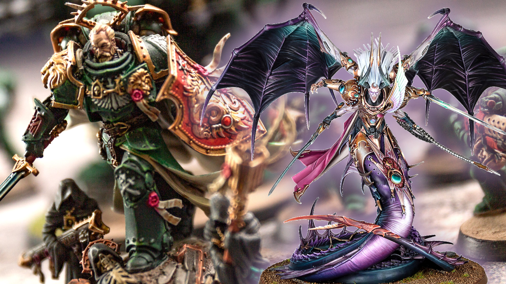
All 21 Warhammer 40k Primarchs, explained
In Warhammer 40,000, the Primarchs are the transhuman sons of the Emperor of Mankind, the powerful primogenitors of the Space Marine legions, and living demigods of Games Workshop's grim, dark sci-fi universe. Their ambitions and flaws drive the greatest conflicts in the setting, from the ancient Horus Heresy to the current Era Indomitus. Read on to meet all 21 (yes, 21) of the Primarchs, and learn who lives, who dies, who turned traitor, and who remained loyal to the end.
The Wargamer team has read all 62 Horus Heresy books between us, and we're embarrassingly knowledgeable about the modern Warhammer 40k factions too - so we have a deep well of lore to work from here. The stories of the primarchs are long, complex, and intertwined - and get to the heart of why the 40k universe is so royally messed up.
In this guide, we'll introduce you to each primarch in turn, explaining where they are in the 'present day' of the 41st millennium. Our FAQs section at the end answers all your other primarch-related questions, from their physical size, to their tabletop models, to the mystery of the 2nd and 11th primarchs.
The Warhammer 40k primarchs are:
- Lion El' Jonson
- Fulgrim
- Perturabo
- Jaghatai Khan
- Leman Russ
- Rogal Dorn
- Konrad Curze
- Sanguinius
- Ferrus Manus
- Angron
- Roboute Guilliman
- Mortarion
- Magnus the Red
- Horus Lupercal
- Lorgar Aurelian
- Vulkan
- Corvus Corax
- Alpharius
- Omegon
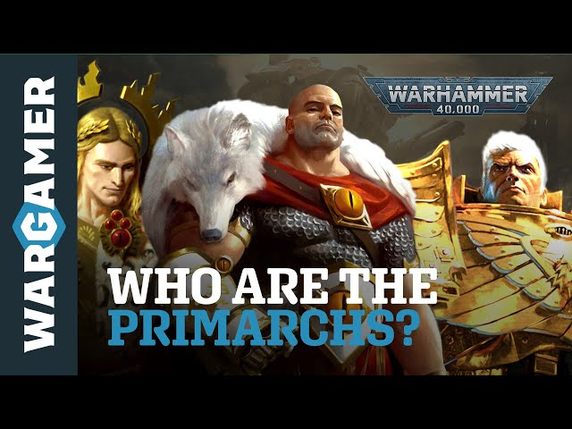
Who are the primarchs in Warhammer 40k?
The Warhammer 40k primarchs aren't regular humans, or even normal Space Marines - they're bio-engineered, demigod-like creatures, bigger, stronger, and the template for the power-armored warriors under their command. They were right at the heart of the Horus Heresy storyline, which took place 10,000 years before the 'current' events of Warhammer 40k.
The Emperor of Mankind originally created 20 primarchs in the late 30th millennium, in secret gene-labs under the Himalaya mountain range. Each one would lead one of the new Space Marine legions in a Great Crusade to reconquer the galaxy. Using his own genetic material, the Emperor designed each primarch to embody a different combination of his traits and skills, each one a unique instrument of conquest.
However, due either to an intervention by the Chaos gods, or a plot of the Emperor's own (depending on which source you believe), all 20 were stolen away, cast through the warp, and marooned as unearthly children on far-flung planets across the galaxy.
So rehomed, the primarchs grew up on remote worlds, in radically different conditions - some in royal opulence, others in squalor or slavery. All matured unnaturally quickly, showing genius level intellect as soon as they could speak, reaching the size of an adult by their early teens and continuing to grow.
Meanwhile the Emperor, his Custodes bodyguards, the Space Marine Legions, and the numberless warhosts of humanity had begun the Great Crusade to conquer the galaxy. One by one the primarchs were found, inducted into the Imperial cause, and placed in command of their allotted legions.
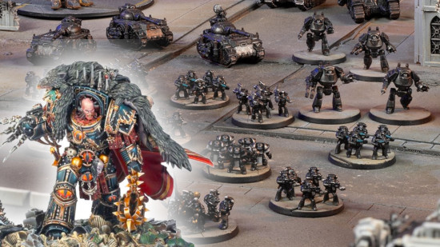
By around 931.M30 (year 931 of the 30th millennium, or our year 29,931) all the named primarchs had rejoined the Imperium of Man, and were fighting humanity's enemies side by side (with the exception of the mysterious 2nd and 11th primarchs - but they get a whole section later in this guide).
For decades the Emperor's plan worked more or less perfectly. Where the Emperor led his loyal primarchs followed, their legions spreading out across the stars, recapturing lost human colonies, exterminating countless xenos races (i.e. aliens) that stood in their way, and paving the way for humanity to dominate the whole galaxy.
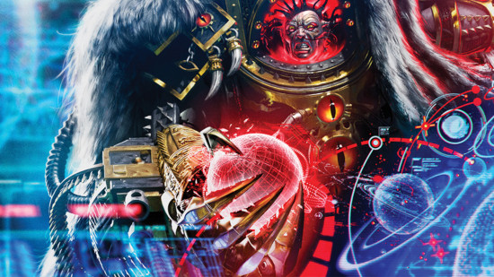
The Primarchs and the Horus Heresy
The triumphs of the Great Crusade were to be eclipsed by a far greater and more terrible conflict. As the millennium turned to M31, the Imperium defeated the mighty Ork empire centred on Ullanor. During the monumental celebration known as the Triumph of Ullanor, the Emperor announced was withdrawing from the crusade, and planned to return to Terra (Earth). He placed Horus Lupercal, primarch of the 16th legion Luna Wolves, in supreme command, naming him Warmaster.
This was the high water mark of the crusade. In the years following Ullanor, the Imperial forces gradually descended into disunity through a combination of deepening rivalries between the primarchs, feelings of distrust and betrayal towards the absent Emperor, and the cunning machinations of Chaos.
The catastrophic civil war that followed was known as the Horus Heresy. Over the course of a few short years the nascent Imperium burned from end to end. Five primarchs died, six became daemonic agents of Chaos, and others were set on paths that would see them lost, possibly forever.
Now you have the overall picture of who the primarchs were and why they're so important, let's examine each of the primarchs individually - in order of the mighty, numbered legions they led into battle.
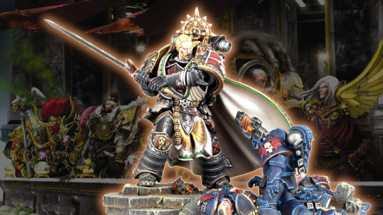
Lion El'Jonson - Dark Angels
- Legion number: I - 1st.
- Aliases: The Lion, The First.
- Status: Alive, active in Imperium Nihilus.
- Home world: Caliban.
Lion El'Jonson, primarch of the 1st Legion Dark Angels, is the epitome of a questing medieval knight. Commonly known simply as 'The Lion', he's one of only two loyalist primarchs we know to still be alive and kicking in the 41st millennium.
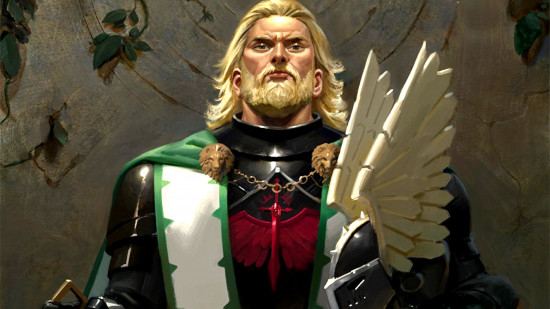
Lion El'Jonson's origins
Discovered on the forest-covered, feudal Death World of Caliban, he was adopted and raised by a man named Luther, who inducted him into a secretive, honor-bound order of knights, where the Lion learned to be a master of both war, and keeping secrets.
Thanks to the unnatural swift growth, skill, and intellect of a primarch, the Lion quickly rose to become master of 'The Order', and led his warriors in a campaign to kill all the warp-mutated 'great beasts' that had terrorized Caliban's people since time immemorial. In the process, he absorbed or defeated all Caliban's other knightly orders, and became de facto ruler of the planet.
When the Emperor came to Caliban, claimed sovereignty over the world, and offered the Lion his own legion, Jonson accepted immediately, with the support of his knights, including Luther, and together they set out to fight in the Great Crusade, winning many glorious victories.
But, as the Imperium tightened its grip on Caliban, levying taxes and felling forests to build mines and factories, rebellions sprang up on the planet. After relations soured between the Lion and Luther, the primarch sent Luther and a portion of his legion back to Caliban to train new recruits and keep the planet's population in check.
However, swayed by Caliban's rebel knights and nobles, and increasingly influenced by Chaos, Luther instead declared Caliban against the Emperor. When the Lion returned with a fleet to investigate, Caliban fired upon him, and the resulting battle destroyed the planet, killed Luther, and - so everyone thought - mortally wounded the Lion himself.
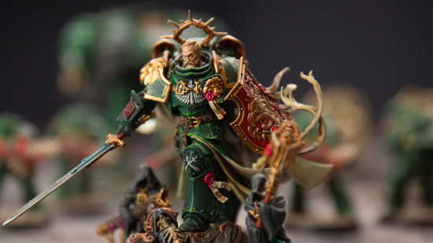
Where is Lion El'Jonson now?
Lion El'Jonson returned to the Warhammer 40k setting, very much alive, in the storyline that kicked off the game's 10th edition in 2023.
He played a major part in the Arks of Omen narrative, and is now travelling across Imperium Nihilus - the portion of the galaxy sealed off from the Imperium by the Great Rift - battling enemies of humanity.
Rumors had long circulated that Lion El'Jonson was alive, hidden somewhere deep within The Rock - the huge fortress spaceship that forms the Dark Angels' headquarters in the 41st millennium. We don't know for sure if that was true.
But we do now know that Jonson survived, asleep, for 10,000 years, and has now returned to the galaxy with a mission to reunite and reform 'fallen' Dark Angels, protect humanity, and fight Chaos.
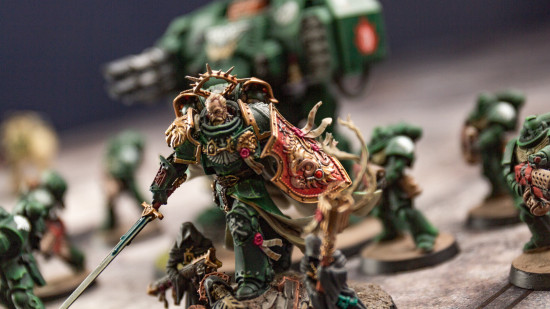
As explained in Mike Brooks' novel The Lion: Son of the Forest, Jonson lived on via a mysterious parallel realm (possibly part of the Warp) that resembled - to him - the forests of Caliban. After some strange, symbolic encounters there, the Lion emerged into real space in early M42, on the planet Camarth, deep in Imperium Nihilus - the portion of the galaxy sealed off from the Imperium by the Great Rift.
During the novel, the Lion links up with several previously 'fallen' Dark Angels, wins them over to his pro-humanity cause, and gathers forces to attack and destroy a Chaos cult called the Ten Thousand Eyes.
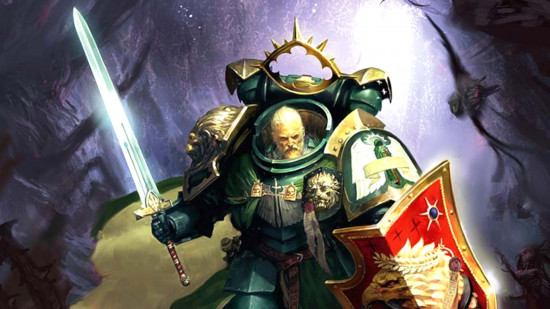
Later, during the concluding events of the Arks of Omen narrative arc, the Lion dueled the Chaos daemon primarch Angron on a warped replica of the dead planet Caliban, called Wormwood - before withdrawing again into the "shadowed paths" of his mysterious mirror dimension to seek more enemies.
For full details, read our complete Lion El'Jonson guide.
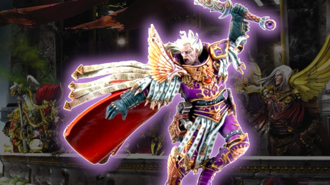
Fulgrim - Emperor's Children
- Legion number: III - 3rd.
- Aliases: The Phoenician, The Iluminator.
- Home world: Chemos.
- Allegiance: Traitor.
- Status: Daemon prince, newly returned to the Warhammer 40k setting.
The elegant, boastful Fulgrim, also called the Phoenician, was primarch of the 3rd Legion Emperor's Children, and one of the primary commanders in Warmaster Horus' rebellion.
A charismatic, famously vain man, he led his purple-armored, perfection-obsessed warriors to battle on the traitor side throughout the Heresy, from the Isstvan V massacre - when Fulgrim killed Ferrus Manus in single combat - right through to the Siege of Terra.
Fulgrim's origins
Marooned on the impoverished mining world of Chemos, the baby Fulgrim was taken in by a group of factory laborers in the city of Callax, and, as he grew and worked the lines there, outdid every other worker, swiftly becoming its senior executive. From there, thanks to his supernatural gifts for strategy and charisma, Fulgrim marshaled Callax's resources to capture and reactivate many long-lost mining facilities across the planet, making Callax the richest, most powerful city on Chemos. Within a few decades, he had united the whole planet under his leadership, rebooting its economy and culture.
His primarch's mind quickly tired of ruling Chemos, though, and, when the Emperor showed up to offer him a new legion and warlike destiny, Fulgrim pledged fealty right away, departing for Terra to build his legion and prepare to join the Great Crusade.
In war, art, and all things, Fulgrim commanded his Emperor's Children to seek utter perfection, never accept second best, and never be satisfied. Though this led to Fulgrim and his warriors developing a reputation for vanity, pride, and pretention, their excellence in battle was unarguable.
But Fulgrim's insatiable, competitive drive for perfection and pre-eminence also made him - and by extension his legion - vulnerable to Slaanesh, the Chaos god of excess, desire, and temptation. While exterminating a xenos race called the Laer, Fulgrim claimed a mysterious sword, which he would later discover contained a powerful daemon of Slaanesh.
Over the following years, the daemon sword gradually corrupted Fulgrim, to the point where, when Horus asked for his allegiance in rebelling against the Emperor, the Phoenician joined willingly - and from that point on, his 'fall' into the service of Slaanesh accelerated.
Deployed by Horus in the Isstvan V Dropsite Massacre, the now Chaos-infused Fulgrim sought out Ferrus Manus, once his most beloved primarch brother, and decapitated him using the daemon sword - in the process becoming fully possessed by the daemon itself.
When Fulgrim finally regained mastery of his own body, he had willingly surrendered himself to Slaanesh, and fought the rest of the war in the Prince of Pleasure's name, as much as Horus Lupercal's. Fulgrim now sought perfection through extreme hedonism and the power of the Warp - eventually transforming into a hideous, multi-armed, serpentine Daemon Prince during the events of Graham McNeill's 2012 novel Angel Exterminatus.
From that point on, Fulgrim and his legion followed their own decadent whims more than Horus - a fact they demonstrated during the Siege of Terra by disobeying orders and abandoning the final assault on the Imperial Palace, instead terrorizing the human populace for their own deranged amusement.
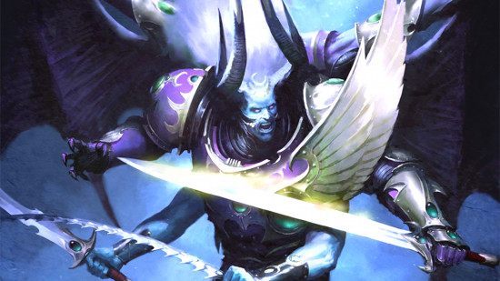
Where is Fulgrim now?
As of January 2025, Fulgrim has returned to the Warhammer 40k galaxy at the head of his Emperor's Children, with a brand new model displaying in all his serpentine, daemonic glory. The new Fulgrim model is a grandiose monstrosity of distorted elegance and magenta-tinted mania.
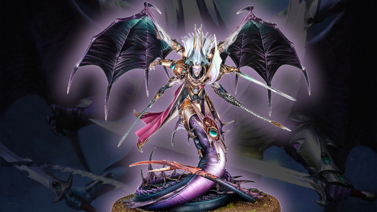
In his four arms, he carries three deadly melee weapons at once: an evil-looking segmented blade that looks somewhere between a power scourge and a Drukhari electro-corrosive whip; a weapon that looks much like the Laer blade that once possessed him; and (tragically) Fireblade, the sword crafted for him by his beloved brother Ferrus Manus, and which Fulgrim used to behead Ferrus at the Dropsite Massacre.
Fulgrim has returned alongside a spectacular range of new Emperor's Children models, but the Emperor's Children Codex doesn't give much insight as to his motivations. He's out to cause trouble for the Imperium, but if there's a greater purpose at play in his machinations, it's not clear what.
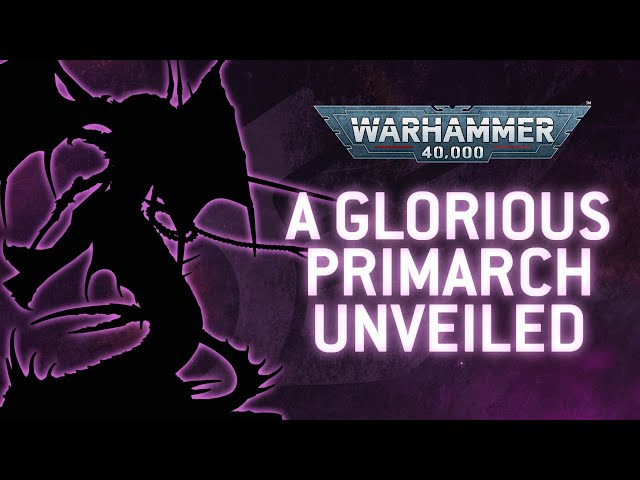
As a Daemon Prince of Slaanesh, Fulgrim is functionally immortal, and previously spent most of his time on his own personal daemon world inside the Eye of Terror - or vacationing with his patron god in Slaanesh's palace within the Warp, sampling every repugnant pleasure you can imagine, and many we hope you can't.
In the 10,000 years since the end of the Heresy war, Fulgrim has returned to real-space occasionally to fight in wars that catch his fancy, or to provide support to one of Abaddon the Despoiler's Black Crusades, but he is capricious, untrustworthy, and completely self-obsessed.
It means that, since Fulgrim is finally making a full return to the Warhammer 40,000, it must be because there's an unmissable opportunity to slake his dark desires - which will certainly be terrible news for the Imperium.
For full details, read our complete Fulgrim guide.
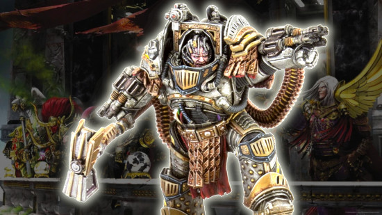
Perturabo - Iron Warriors
- Legion number: IV - 4th.
- Aliases: Lord of Iron, Hammer of Olympia.
- Home world: Olympia.
- Allegiance: Traitor.
- Status: Daemon prince, located on the daemon world Medrengard within the Eye of Terror.
The bitter-hearted strategic genius Perturabo is the traitor primarch of the 4th Legion Iron Warriors, a major figure on Horus' side in the Heresy war, and the primary commander of the traitor forces, nigh unto the final stages of the Siege of Terra.
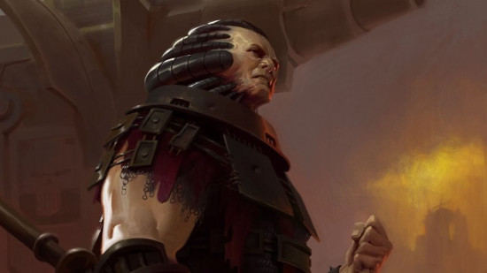
Perturabo's origins
After the baby Perturabo landed on the planet Olympia, he was discovered and adopted by a man named Dammekos, the Tyrant (ruler) of the city state of Lochos - a calculating leader who quickly saw the boy's value as a mathematical genius, and resolved to exploit it.
The young Perturabo became the foremost commander in Dammekos' armies, inventing countless new military technologies and techniques that made Lochos the predominant power on Olympia, crushing and subjugating all its rivals by force of arms.
When the Emperor rediscovered Perturabo - in the process claiming Olympia for the Imperium - the primarch went willingly to Terra to take over command of his new Iron Warriors legion, reportedly unsurprised to learn of his superhuman origins.
However, Perturabo remained forever cold, unsatisfied, and convinced that his superiors both under-valued and under-appreciated him. This bred in him a lingering discontent, which grew into toxic resentment during the Great Crusade, when his Iron Warriors won victory after victory in some of the war's most brutal and unglamorous campaigns, but never won the acclaim or glory of the Ultramarines or Imperial Fists.
When Horus approached him to join his rebellion against the Emperor, Perturabo accepted, seeing an opportunity to fight out his many grievances and punish those that he felt had belittled him, chief among them not only the Emperor himself, but also Perturabo's personal nemesis: Rogal Dorn, primarch of the Imperial Fists.
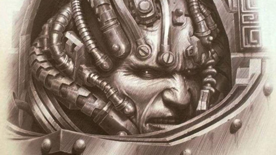
In the run up to the Heresy, the ruling class of Olympia rebelled. In his last, questionably loyal act, Perturabo sanctioned his world to death, quelling the rebelling, but also severing his moral ties to the Imperium. He secretly sided with the Warmaster and led his legion to join in the lethal dropsite massacre on Istvaan V.
When Dorn's reprisal fleet attempted to bring the fight to the traitors, Perturabo's forces were tasked with preventing their advance at Phaal. Perturabo expected to face the standard, hidebound tactics of the Imperial Fists, but fate had intervened, and it was the uncharacteristically aggressive Alexis Polux who led the force. Rather than wiping out the Fists, the naval battle worked to a bloody and inconclusive stalemate.
Perturabo was disturbed by the weakness, and during the Heresy pursued various strategies to attempt to shore up his power. He aided Fulgrim in a scheme that the Iron Warriors and Emperor's Children Legions into the Eye of Terror - but it was Fulgrim who emerged with a strange prize. In pursuit of another relic, Perturabo invaded Tallarn, a conflict that devolved into the largest tank war in Imperial history.
As we see in the Siege of Terra novels, Perturabo was tasked by Horus with orchestrating the assault on Terra and the Imperial Palace, and he commanded the traitors' attack flawlessly. But, just before the final siege on the palace, overcome with rage that Horus was clearly content to win the battle with Chaotic sorcery, not the martial skill of the legions, he quit the siege with his Iron Warriors, leaving the other traitors to finish the fight.
After Horus' defeat on Terra, the Iron Warriors were the only Legion still functioning with anywhere near full effectiveness. By this point Perturabo's eyes had been opened to the gifts of the gods, but to pursue his own plans he sabotaged a plot by Lorgar and the Word Bearers that would have led to immediate Imperial retribution and reignite the galactic warpstorm that allowed daemons to walk among mankind.
The Iron Warriors retreat from Terra was orderly, and they held onto a substantial realm. Perturabo made a stop on the Imperial Fists-held planet Sebastus IV, to vent his fury against Dorn by capturing the Fists' most prized fortress. Dorn pursued, of course - and the ensuing Battle of the Iron Cage ended with a vast portion of the Imperial Fists legion wiped out, Rogal Dorn's spirit broken, and Perturabo escaping, along with the looted gene-seed of hundreds of dead Imperial Fist legionaries.
Finally free to pursue his own destiny - though never actually happy about it - Perturabo used the gene-seed for a ritual sacrifice to the Chaos gods which granted him ascension to daemonhood, becoming a Daemon Prince of Chaos Undivided, before setting up his legion's new home, the fortress world of Medrengard, within the Eye of Terror.
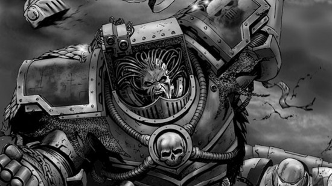
Where is Perturabo now?
As a Daemon Prince, Perturabo can't easily manifest outside of Warp space for long, and he's spent much of the last ten millennia holed up in his castle on Medrengard - but that doesn't mean he's been idle.
According to 2017's 8th Edition Death Guard codex, Perturabo led a huge force of Iron Warriors in battle against his hated brother Mortarion and the Death Guard on the planet Dysactis - but was forced into a defeat due to the creeping Nurgle contagions spread by the Death Guard armies, and fled.
In the March 2023 Arks of Omen: Vashtorr lore book, that Perturabo has long been collaborating with the Chaos demi-god Vashtorr the Arkifane on "many nightmarish projects" - presumably new and ever nastier breeds of daemon engines.
The 2026 Eye of Terror campaign supplement revealed what Perturabo has been working towards: he's going to turn the entire galaxy into an inescapable siegeworks, the Infinite Citadel, which will smother the Imperium in inescapable bands of iron. His efforts to invest and fortify the ruins of Cadia are the first stage in an inescapable plan.
For full details, read our complete Perturabo guide.
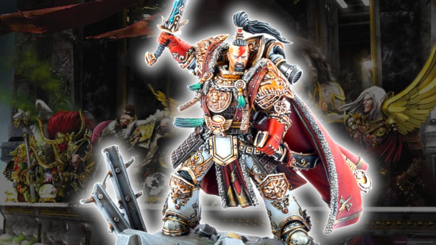
Jaghatai Khan - White Scars
- Legion number: V - 5th.
- Aliases: The Warhawk, The Great Khan.
- Home world: Chogoris.
- Allegiance: Loyalist.
- Status: Lost in the Webway.
The noble Jaghatai Khan is the loyalist primarch of the 5th Legion White Scars, hailing from the Central Asia-inspired steppes of the planet Chogoris.
A charismatic leader and peerless, master hunter, Jaghatai courted controversy by maintaining old Chogorian religious and cultural traditions that conflicted with Imperial doctrine - and at the outset of the Horus Heresy, many believed he would turn traitor - but the Khan declared for the Emperor, and was pivotal in the defense of Terra.
Jaghatai Khan's origins
The Khan was brought up on a late feudal world called Chogoris, which was ruled by an aristocratic power called the Palatine, but - outside the Palatine's domain - populated by disparate, nomadic warrior tribes. He was found and adopted by a man named Ong Khan, chieftain of the Talaskar tribe.
When Jaghatai was still a child (but already a supreme warrior, thanks to his primarch-like accelerated growth and ability), Ong Khan was killed by their rival Kurayed tribe, and the young Jaghatai took command, slaughtering the Kurayeds in revenge.
Having proven himself in battle, the Khan led a long campaign of wars to amalgamate the Chogorian tribes within his new 'Talaskar Confederacy', swiftly building his own, highly organized army - which he eventually used to depose the Palatine, becoming 'Khagan', or sole ruler of the planet, by age 20.
Six months later, the Emperor arrived (alongside Horus Lupercal) to claim fealty from both Jaghatai and Chogoris - and, subject to negotiating key guarantees for his people, the Khan agreed. Taking up his role as primarch of the White Scars legion, the Khan swelled its ranks with recruits from Chogoris, and soon went off to war in the Great Crusade.
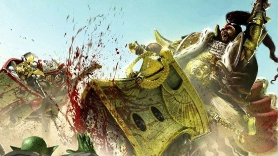
In war, Jaghatai fostered a legion focused on agile, hit-and-run tactics, and encouraged his warriors to value honor, valor, and joy; able to laugh as they kill, but for the pleasures of life, skill, and achievement, rather than the killing itself.
At the Siege of Terra, the Khan and his legion both fought in the most high-risk, arguably reckless engagements, and took horrendous losses - but in the process set Horus' assault back again and again, buying time for Imperial reinforcements to arrive.
Grievously injured multiple times - including in an epic duel with Mortarion that nearly killed him - the Khan survived the siege, and led counter-attack efforts to wipe out the fleeing Chaos Space Marines after Horus' death.
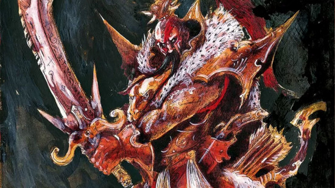
Where is Jaghatai Khan now?
Jaghatai Khan is currently lost in the Webway, and hasn't been seen for ten millennia. He fought alongside the White Scars for 70 more years after the Horus Heresy ended, but disappeared after launching an attack on Drukhari pirates in the Webway in 084.M31.
The White Scars still hold out hope that their primarch is alive and well, and believe he will return to their Chapter at an unknown time in the future, when they need him most. Being fundamentally immortal, 'alive' seems possible. But Comorragh is not particularly known as a 'wellness' retreat.
For more info, read our complete guide to Jaghatai Khan.
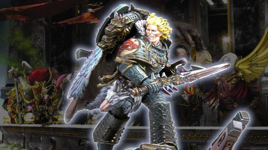
Leman Russ - Space Wolves
- Legion number: VI - 6th.
- Aliases: Wolf King, Great Wolf, The Emperor's Executioner.
- Home world: Fenris.
- Allegiance: Loyalist.
- Status: Lost in the Eye of Terror.
The ferocious Leman Russ is primarch of the 6th Legion Space Wolves - an untameable, instinctual, and utterly deadly warrior, famous for his quick temper and fierce loyalty to the Emperor.
The latter quality led him to become the Emperor's chosen executioner, sent to mete out justice to rebels - most famously by razing the entire planet of Prospero to punish Magnus and his Thousand Sons (though that was more by Horus' plotting than the Emperor's will).
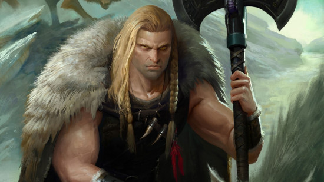
Leman Russ's origins
The baby Leman Russ landed on the planet Fenris, an extremely hostile, ice-covered death world, and was first adopted not by a human - but by a mother Thunderwolf (hulking, direwolf creatures native to Fenris) and raised among her cubs.
When human Fenrisian hunters slaughtered the child's adoptive pack, however, he was recognized as, er, not a wolf, and brought before King Thengir, leader of the Russ tribe, who inducted him as a warrior. We don't have many confirmed details of Leman's upbringing - but Fenrisian tales tell of his unimaginable heroic exploits; slaying whole armies and massive beasts with his bare hands, that sort of thing.
What we do know is that he built such a mighty reputation that, when Thengir died, he was named King in his place - and all the other Fenrisian tribes fell into line behind him, leaving Leman Russ, the Wolf King, in command of the whole planet.
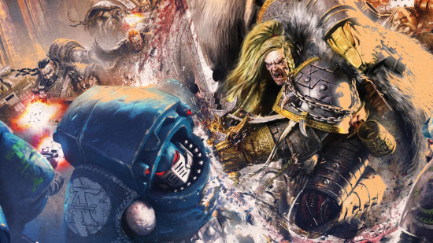
In appropriate Norse mythological style, when the Emperor came to Fenris in disguise to recruit Russ as a primarch, the Wolf King said no - and challenged the cloaked stranger to complete three challenges first: an eating contest, a drinking contest, and finally single combat. Russ out-ate and out-drank the Emperor, but, for the first time in his life, he was easily defeated in the fight - and declared undying fealty on the spot.
In the Great Crusade, Leman Russ and his Space Wolves were often derided as bestial wild-men - but always feared, too, for their sheer ferocity and destructive power. Russ' honor-bound loyalty and hatred for oathbreakers made him a perfect choice for the role of executioner - which tasked him first with censuring Angron, and later Magnus, in the burning of Prospero.
Where is Leman Russ now?
Leman Russ is lost in the Eye of Terror, after charging off to hunt heretics, his closest warriors in tow, in 211.M31.
Reaching Terra too late to help in the final fight against Horus, to find Sanguinius dead and the Emperor mortally wounded, Russ was overcome by rage and despair. He clashed with his brother primarchs - primarily Roboute Guilliman - over the proposed reforms to the Imperium, especially the Codex Astartes, which would split his legion up into smaller chunks.
Ultimately he left his legion, taking a select few battle-brothers to pursue the escaped traitor forces into the Eye of Terror, leaving Björn the Fell-Handed in charge. But he left his warriors with a promise to return for a "final battle" which he referred to as the Wolf-Time, a prophecy in which the Space Wolves still believe strongly.
For full details, read our complete guide to Leman Russ.
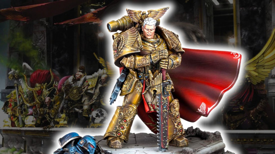
Rogal Dorn - Imperial Fists
- Legion number: VII - 7th.
- Aliases: Praetorian of Terra, Lord of the Phalanx.
- Home world: Inwit.
- Allegiance: Loyalist.
- Status: Missing, presumed dead.
Dour, doughty, dutiful Rogal Dorn, also called the Praetorian for his role commanding the defense of Terra during the Heresy war, was primarch of the 7th Legion Imperial Fists, and renowned as the most steadfast and unshakeable of the loyalist primarchs.
A superhumanly expert defensive strategist, he and his legion were tasked with converting Terra and the Imperial Palace into the greatest fortress ever known, to protect against Horus. In this, he was pitted against his nemesis Perturabo, equally famed for his own skill at smashing fortresses.
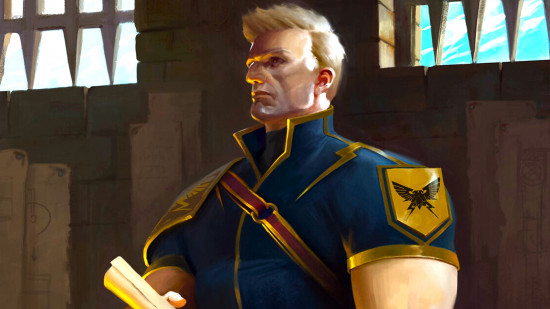
Rogal Dorn's origins
Landing on the icy death world of Inwit, the infant Rogal Dorn was taken in - lucky for him - by the powerful leader of one of the planet's hive clans, who (though austere) raised Rogal affectionately, as a surrogate grandson.
We don't know much more about his upbringing, other than that life on Inwit was tough, and that his adoptive grandfather's tutelage made Dorn resilient, practical, and unsentimental - cementing qualities he had already received in his genetic programming from the Emperor.
Decades after the clan leader died and was succeeded by Dorn himself, the Emperor arrived on Inwit to induct Rogal as primarch of the Imperial Fists - a destiny he accepted without question, and inculcated in his legionaries the same grim stoicism and resourcefulness that were Dorn's own trademark.
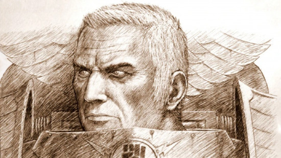
In the early part of the Great Crusade, Rogal Dorn and his Imperial Fists fought alongside the other legions, wiping out aliens and recapturing human planets. But, after the Emperor named Horus Lupercal Warmaster in his place at the great Triumph of Ullanor, he ordered Dorn and his Legion back to Terra to fortify the Imperial Palace as his personal 'praetorians'.
Like every other task Dorn had ever been given, he got on and did it - though it rankled with many of his warriors, and raised confusion and even disdain from the other primarchs and legions.
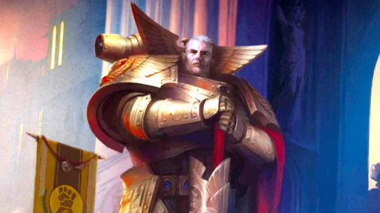
Dorn during the heresy
Initially, the reason Dorn was reassigned from the crusade to Terra was for extra security while the Emperor developed his secret Webway Project beneath the palace. After the Horus Heresy began, Dorn's number one job was to fortify Terra and the entire Sol system against traitor attack.
When news of the Istvaan III massacre reached the throne world, the Emperor was ensconced on the Golden Throne holding back the psychic upheaval caused by Magnus' damage to the Webway Project, leaving his sigilite Malcador as the Regent of Imperial civil society and Dorn as the highest ranking military commander.
Dorn was the overall co-ordinator of much Imperial military strategy, at least among those parts that were connected to the throneworld. This included endeavours like the reprisal fleet of Space Marine legions dispatched to crush the traitors on Isstvan V and then, after the terrible events of the dropsite massacre, the decision to retrench, fortify, and use the Garmon cluster as a stalling action to bleed the traitor advance.
Though he had a reputation for stolid thinking and a mastery of static defense, Dorn was not incapable of deft maneuvers. Through careful misdirection he lured the Alpha Legion to commit nearly its full forces to an audacious assault aimed at capturing the planet Pluto and its fortress moons prior to the invasion of the Solar System. Dorn was able to gut the Alpha Legion forces and slew his brother Alpharius, though they were able to retrieve invaluable information about the Sol system's defenses for the Warmaster.
When the Siege of Terra finally came, Horus' traitors arrived in such overwhelming force, and with such expert leadership from the siege-master Perturabo, that even Dorn accepted defeat was certain, unless they could hold out for reinforcements to arrive from Roboute Guilliman's Ultramarines.
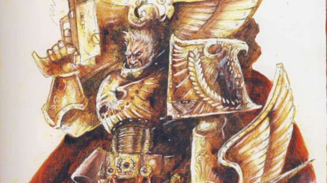
The reinforcements did not arrive in time - and at the climax of the siege, Rogal Dorn went with the Emperor, Sanguinius, Constantin Valdor the custodian Caecaltus Dusk, and a detachment of troops, on a last ditch teleport assault on Horus' flagship.
While the mission was a pyrrhic success, and Horus was killed, Dorn played no part in it. As we read in Dan Abnett's The End And The Death trilogy, Horus' warp magic trapped him in a maddening realm of red dust for what felt to Dorn like centuries, intending to corrupt the Primarch into serving the Chaos blood god Khorne.
This failed, and Dorn escaped - just in time to learn that Horus was dead, but so was Sanguinius, and the Emperor was to be permanently installed on the Golden Throne to keep him alive. Consumed by guilt, grief, and rage, Dorn led his legion on a crusade of vengeance against the fleeing traitors, which ultimately left the Imperial Fists decimated at the hands of Perturabo's Iron Warriors - and Dorn himself a broken man.
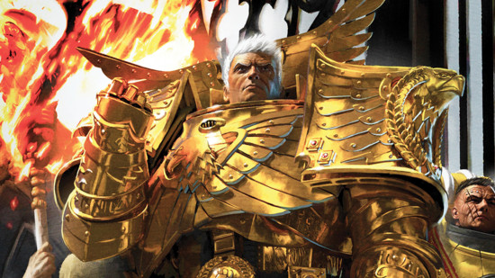
Where is Rogal Dorn now?
Rogal Dorn is missing, presumed dead. Though Dorn was reportedly killed during Abaddon's first Black Crusade, the Imperial Fists claim they have his remains aboard their massive, space-faring fortress monastery, the Phalanx - but they won't let anyone see them.
The very first 40k novel, 'Space Marine' by Ian Watson, describes Dorn's remains as a complete skeleton encased in amber. But Ian Watson's books, published under the Warhammer Books label in the early 90s, are some of very few pieces of 40k fiction that GW has officially 'decanonized'.
The Index Astartes articles from White Dwarf in the early 2000s fleshed out the histories of the Primarchs for the first time. The Imperial Fists article said that Dorn fell during a boarding attack on the Despoiler class vessel The Sword of Sacrilege; when the remainder of the Imperial Fists fleet arrived, they "recovered what remained of Rogal Dorn". Only his "engraved skeletal hand" is described explicitly.
By the sixth edition Codex Space Marines, the lore had changed so that "the only trace of their Primarch [the Imperial Fists] uncovered by their subsequent searching was a single fist". This version of events was repeated in the eighth edition Imperial Fists codex supplement.
The visions of Konrad Curze suggest that Dorn is not necessarily still alive. In the novella Prince of Crows, we learn that Curze has visions of Dorn "dragged down by a hundred murderers in a dark tunnel", and in the novel Konrad Curze: Night Haunter he lists "Dorn, torn to pieces" alongside the dead Sanguinius and Ferrus Manus among the dead Primarchs.
Rumors have circulated for years that Dorn will be the next loyalist primarch to return to the modern 40k setting - especially after his most zealous descendants the Black Templars got their magnificent new model range in 2022 - but the Lion beat him to it in 2023.
For more info, read our complete guide to Rogal Dorn.
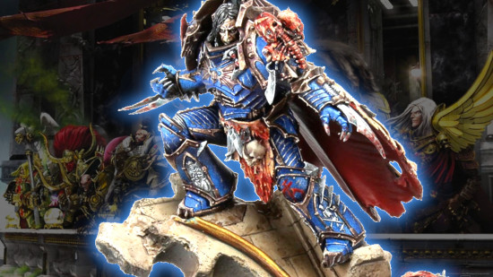
Konrad Curze - Night Lords
- Legion number: VIII - 8th.
- Aliases: Night Haunter.
- Home world: Nostramo.
- Allegiance: Traitor.
- Status: Dead - confirmed killed by an Imperial assassin.
Gaunt, ivory-skinned, and sadistic, Konrad Curze - often called the Night Haunter - was the brutal traitor primarch of the 8th Legion Night Lords. Made ruthless by a horrific upbringing and tortured by psychic visions his whole life, Curze delighted in bringing terror, bloodshed, and devastation to the worlds he conquered in the Emperor's name, taking revenge on a galaxy he saw as incurably evil.
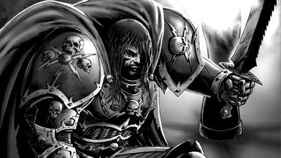
Konrad Curze's origins
Unlike most other primarchs, Konrad Curze wasn't discovered or adopted by anyone when he crash-landed on the planet Nostramo, a mining world shrouded in perpetual darkness. Instead, he fended for himself in a hellish society overrun with desperate poverty, exploitation by a rarefied, mega-rich elite class, and rampant, brutal crime.
Surviving by scavenging food and instantly slaying anyone who posed a threat to him, Curze gradually became a kind of vigilante serial killer, using his superior primarch-level strength, stealth, and skill, first merely in self-defense, but increasingly deliberately, to slaughter criminals in punishment for their sins. All the while, he continued suffering painful dreams and premonitions of his future.
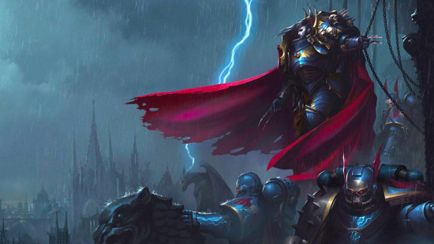
As Curze left more and more brutalized bodies in his wake, he took on the mantle of the Night Haunter, dispensing savage, murderous justice to smash the gangs that ran Nostramo's underclass. Eventually, he was so feared, and was known to have personally killed so many of the planet's most powerful crime lords, that the remaining leaders surrendered, allowing Curze to become the de facto king of Nostramo, enforcing an equitable, law-abiding society entirely through terror.
When the Emperor came to Nostramo to claim Curze, he was unsurprised, having seen it in his dreams, and went willingly, believing it was his destiny, and took command of his legion, naming them the Night Lords.
Under Night Haunter's leadership they prosecuted the Great Crusade exactly as he had governed Nostramo: on every planet, they inflicted swift, merciless, and gratuitous slaughter in order to instil permanent, terrified obedience in the populace. It was highly effective - but gained them an unpleasant reputation for 'needless' savagery among the other primarchs.
Where is Konrad Curze now?
Konrad Curze is dead, one of the five primarchs who died during the Horus Heresy. He was killed by the Callidus Assassin M'Shem of the Imperial Officio Assassinorum in his audience chamber, the Screaming Gallery - screaming because it was made from living human beings sutured together - on the world Tsagualsa in the Eastern galactic fringe.
Kurze had been forced to foresee his own death for decades thanks to his unwanted, excruciating psychic visions. The novel 'Night Haunter' suggests that he thought this fate could be averted, but he chose not to, preferring to be vindicated through his execution - because if he could escape that, it would mean that he could have been something other than the monster he became.
For full information, read our complete guide to Konrad Curze.
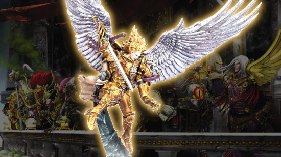
Sanguinius - Blood Angels
- Legion number: IX - 9th.
- Aliases: The Angel.
- Home world: Baal.
- Allegiance: Loyalist.
- Status: Dead - killed by Horus in a duel at the end of the Siege of Terra.
The beloved, white-winged Sanguinius - often called simply The Angel - was the loyalist primarch of the 9th Legion Blood Angels, and is remembered as one of the Imperium's purest, most respected heroes. Cursed with the Emperor's psychic power of foresight, but little control over it, Sanguinius was a singularly inspirational frontline commander who fought bravely on the loyalist side throughout the Horus Heresy war, in the knowledge that he was destined to die in it.
At the climax of the Siege of Terra, he teleported onto Horus' flagship the Vengeful spirit alongside the Emperor to confront the traitor Warmaster, and died in single combat against Horus, who had once been his most trusted brother. Sanguinius' psychic death scream echoed across the galaxy, sending every single Blood Angel space marine into a grief-fueled mania that has remained, barely contained, in the psyche of the chapter ever since.
Sanguinius' origins
As a child, Sanguinius landed on Baal Secundus - the second moon of the planet Baal - a desolate, hostile place, devastated by a long-forgotten xenos war which left most of the surface toxic and/or irradiated, and populated largely by feral, mutant humans.
Adopted by a human tribe known as 'The Blood', Sanguinius grew quickly to become its leader, winning countless victories against the mutants by superior strategy, and inspiring his people through his charismatic speeches (the wings helped too, as they associated him with Baal's ancient myth of a divine, Golden Angel).
When the Emperor arrived (in disguise, as he did with Leman Russ and others), Sanguinius recognized him at once, having already foreseen their meeting - and agreed to join the Imperium as a primarch, on the condition the Emperor accepted and protected his people. The Emperor acceded, and a swathe of Sanguinius' tribesmen became the core of his new legion.
Crucially, before taking command of his full Space Marine legion, Sanguinius spent three years learning and training with Horus Lupercal and the Luna Wolves, creating a strong bond of mutual respect and affection between the two brothers. In Graham McNeill's False Gods - the second Horus Heresy novel - Horus even reflects to himself that Sanguinius, not he, should have been made Warmaster.
When Sanguinius claimed his legion, they were known as the Revenants - absolutely savage, ritualistic cannibals, disdained by their Imperial comrades. But, where other primarchs might have brutally repressed their warriors' old ways (Perturabo would simply have killed a portion of them to discipline the others) Sanguinius won them over with charm, understanding, and idealism. He learned each and every warrior's name, and swore his allegiance to them, rather than the other way around.
Rechristened the Blood Angels, they became one of the most esteemed and celebrated Space Marine forces, united by love of their primarch and the desire to redeem themselves in glory - and won a string of spectacular victories throughout the Great Crusade.
But beneath their rehabilitated, honorable surface, the Blood Angels had a dark secret, caused by a hidden flaw in Sanguinius' own gene-seed: one by one, legionaries were falling to the 'Red Thirst'; a kind of bloodthirsty, killing frenzy that prevented them from distinguishing friend from foe.
With the help of Horus, his favorite brother, Sanguinius kept it secret and pledged to find a cure. When Horus turned traitor, however, he turned Sanguinius' secret vulnerability against him, and on Signus Prime, the Angel was almost tricked by a daemon into sacrificing himself to cure his beloved Blood Angels of their curse.
Though he had a long road to get home, Sanguinius and his bloodied legion made it back to the Imperial palace in time to help defend it in the Siege of Terra - and the primarch himself fought multiple heroic actions with his legendary twin weapons, the Spear of Telesto and the Blade Encarmine. His tireless courage kept the human soldiers and Space Marines fighting even when all hope seemed lost, buying the defenders precious time.
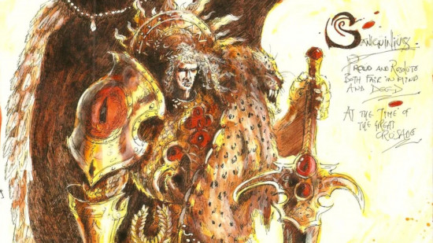
Where is Sanguinius now?
Sanguinius is dead, one of five 40k primarchs who were killed during the Horus Heresy war. During the closing stages of the Siege of Terra, Sanguinius traveled with the Emperor, Rogal Dorn, Constantin Valdor, and their warriors in the ill-fated Anabasis strike teams to strike at Warmaster Horus aboard his warp-altered flagship, the Vengeful Spirit.
The entire attack a trap that Horus himself had baited, and the Warmaster used his control of the Warp to lure Sanguinius into an extended single combat duel in his throne room. Trying, and failing, one last time, to seduce Sanguinius over to the traitor side, Horus eventually fought and killed his once beloved brother, shattering him utterly with the giant mace Worldbreaker.
For more details, read our complete guide to Sanguinius.
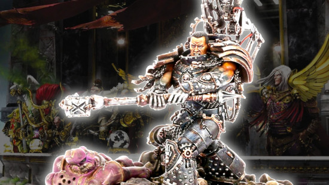
Ferrus Manus - Iron Hands
- Legion number: X - 10th.
- Aliases: The Gorgon, The Great Ironfather.
- Home world: Medusa.
- Allegiance: Loyalist.
- Status: Dead - killed by Fulgrim on Isstvan V at the outset of the Heresy.
The surly, insular, weapon-crafting genius Ferrus Manus, also known as the Gorgon, was the loyalist primarch of the 10th Legion Iron Hands. The most creative of all the primarchs, he used his extraordinary metallic hands - coated in the Necrons' self-repairing Necrodermis metal - to forge magnificent weapons for the other primarchs, until he was betrayed and killed by his beloved brother Fulgrim at Isstvan V.
Ferrus Manus' origins
Crash-landing on the volcanic wasteland planet of Medusa, very close to the Eye of Terror, Ferrus Manus was not adopted and raised by any local powers or tribes, but instead wandered on his own, hunting a vast, metallic wyrm which had attacked him as a child, shortly after he arrived.
Eventually, he successfully killed the wyrm - despite its invulnerability to attacks - by melting it in boiling lava, and in the process coated his hands with the mysterious, self-repairing xenos metal Necrodermis, from which the creature had been made. This legendary feat, and Ferrus' unnatural expertise in engineering, made him a figure of awed respect for Medusa's tribes, whom he supported and trained as an independent advisor - never claiming ultimate power over his homeworld, as other primarchs had done.
When the Emperor came for him, Ferrus Manus dueled him to test his so-called father's mettle - and pledged fealty to the Imperium after he was soundly defeated. Taking command of his own Space Marine legion - now called the Iron Hands after their primarch's trademark - Ferrus Manus fought the Great Crusade without mercy or compunction, seeing it as a necessary evil to cut away the weak bits of mankind, and rebuild it stronger.
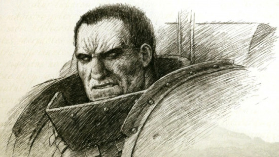
Always mocked by his brothers for his dour, joyless demeanor - and grizzled, sour-faced, scarred appearance - Ferrus was famed as among the staunchest, most hard-working, and self-sacrificing primarchs, unflinchingly loyal to the Emperor, and constantly at work to improve his legion's battle efficiency through technology. His engineering excellence and enthusiasm for tech use made him a close ally of the Mechanicum - now called the Adeptus Mechanicus.
Respected, but never particularly loved, by his primarch brothers, Ferrus Manus' closest friend among them was - counterintuitively - the flamboyant, grinning Fulgrim of the Emperor's Children, and they fought together in several big campaigns. Marking their friendship, they competed to forge each other relic weapons: Ferrus Manus gifted Fulgrim the sword Fireblade, and in return Fulgrim made him a titanic thunder hammer named Forgebreaker.
When Fulgrim later turned to Chaos and Horus Lupercal's rebellion against the Emperor, the traitor Warmaster sent him to treat with Ferrus Manus, and convince him to join the traitor side. It didn't go well - enraged by the very idea of treachery, Ferrus attacked Fulgrim, broke the sword Fireblade, and almost killed him - but stopped short, merely taking back Forgebreaker.
Later, Ferrus Manus led his legion to crush Horus' rebellion at Isstvan V, knowing he would have to finish the job and kill Fulgrim - but when they met in battle, Fulgrim was empowered by Chaos through his new daemon sword, and killed Ferrus Manus by decapitation, making him the first primarch to die in the Horus Heresy.
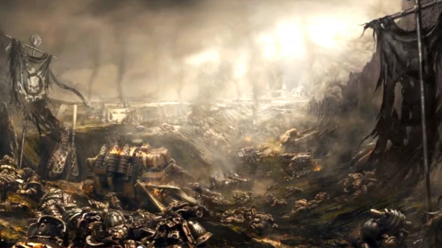
Where is Ferrus Manus now?
Ferrus Manus is dead - one of the five primarchs killed during the Horus Heresy. During the infamous 'Dropsite Massacre' on Isstvan V, when Horus betrayed, ambushed, and nearly annihilated the unsuspecting Iron Hands, Salamanders, and Raven Guard legions, Ferrus Manus dueled his once-favorite brother primarch Fulgrim, who chopped his head off with a daemon sword.
Ferrus Manus' skull (or a warp replica of it) was later kept in Horus Lupercal's throne room aboard the Vengeful Spirit. When Sanguinius encountered the skull on his way to fight Horus in the final stage of the Siege of Terra, a warp echo of Ferrus Manus appeared to the Blood Angels primarch, speaking to him of the dark futures that were to come.
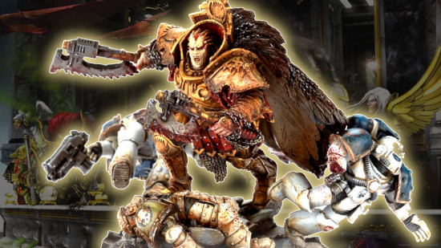
Angron - World Eaters
- Legion number: XII - 12th.
- Aliases: The Red Angel, Lord of the Red Sands.
- Home world: Nuceria.
- Allegiance: Traitor.
- Status: Daemon Prince, alive and active.
Bloodthirstiest of all the Emperor's 'sons', Angron is the traitor primarch of the 12th Legion World Eaters, and one of the four daemon primarchs actively waging war in the current 40k lore.
A former enslaved gladiator and tragic abuse victim, Angron weaponized his boundless rage and strength to survive a horrific upbringing and lead thousands of enslaved people to freedom - but in the end it led him into slavery once again, as he was manipulated by Lorgar into becoming a Daemon Prince in service of the Blood God Khorne.
Angron's origins
The baby Angron landed on the outlying planet of Nuceria, where he was found and enslaved by the world's rulers, a group called the High Riders. As a small child, he was thrown into a fighting pit surrounded by cheering crowds, and forced to kill hundreds of other slaves just to survive - yet despite this, he was distinguished by a literally supernatural capacity for empathy, and an endurance that allowed him to accept the fears of others.
Quickly making a name among Nuceria's slave gladiators thanks to his supernatural strength and skill, Angron became the world's most famous pit fighter - whereupon the High Riders forced him to kill his closest friend, fellow gladiator Oenomaus. When Angron refused, they fitted him with the Butcher's Nails, a hellish brain-torture device which causes maddening pain for which the only partial cure is mindless violence.
Racked with grief and rage, Angron took revenge by leading a huge slave revolt, escaping the High Riders with thousands of other enslaved people, and taking refuge in remote mountains. They survived, and fought off every attempt to recapture them - but Angron's army was eventually surrounded by superior forces, starving to death, with no hope of victory.
The Emperor chose that moment to arrive and command Angron to rejoin the Imperium - but he refused, preferring to stay and die with honor alongside his gladiator comrades. The Emperor, though, is famously not in the habit of taking 'no' for an answer, and teleported Angron up to his ship just before the battle, letting Angron watch as his rebels were slaughtered without him. In that moment, the seed of resentment was sown that ensured Angron would avenge himself on the Emperor at the first opportunity.
The Emperor made an attempt to remove the Butcher's Nails from Angron's brain, aided by the techno-archaeologist Arkhan Land. However, the Nails were not merely embedded into Angron's cerebellum, but had actually replaced much of his nervous system. It was simply impossible to remove the Nails without killing him.
With barely another word, and certainly no sympathy, Angron was immediately sent to take command of his legion, then called the War Hounds. Initially Angron ignored them, and killed any who approached him, but eventually Captain Khârn talked him round, and Angron resolved to reform the legion - which he now renamed the World Eaters - in his own twisted image.
He ordered that every legionary be fitted with the Butcher's Nails, just as he had been - creating an army of Space Marines who could only find peace or satisfaction in wanton bloodshed. He fought every battle of the Great Crusade in that vein, achieving victories by overwhelming, indiscriminate slaughter of every living thing in his path.
The other primarchs despised him for it; Leman Russ came to blows with him in a spat that could have erupted into all out civil war; Angron ignored them all. All he cared, or would ever care about, was dulling the psychological pain of abandoning his comrades on Nuceria, and the constant physical pain of the torture spikes in his skull.
When Horus declared civil war on the Emperor, Angron was his natural ally - he had always hated the Emperor, and would gladly commit his legion to the bloodiest war in history. From then on, Angron and the World Eaters became one of the traitors' most fearsome armies, and, with his ever increasing need for constant violence, it was only a matter of time until Angon fell into the clutches of the Chaos blood god, Khorne.
An enslaved person who fought his way out of his chains, Angron never wanted to serve anybody - least of all the Ruinous Powers - but by the late stages of the Heresy war he had lost almost all control over himself. In battle on his former homeworld Nuceria, at the very height of Angron's blood-rage, Lorgar took the opportunity to offer his brother to Khorne, in a ritual that transformed Angron into a gigantic, winged Daemon Prince, bound to serve the Blood God for eternity.
Where is Angron now?
As a Daemon Prince of Khorne, Angron is functionally immortal, and has returned to plague the Imperium several times.
While few Imperial Citizens know of it, the dreaded Ork invasion of Armageddon was not the first time that vital world was invaded. In 444.M41 Angron led a full scale invasion of that world at the head of a massed force of World Eaters for the first time since the Legion fell apart at Skalathrax (the infamous battle that gave Khârn the Betrayer his monicker). Leading a full octet of Bloodthirsters, Angron was only banished by the sacrifice of 96 out of 109 Grey Knights.
Angron emerged back into reality after the opening of the Cicatrix Maledictum, annihilating the Imperial fifth Indomitus Crusade Fleet in a tide of maddening wrath during the Arks of Omen storyline. He was driven back to the Warp by the unexpected arrival of Lion El'Jonson.
Since then, Angron has returned to Armageddon once more, opening the Red Angel's Gate in the Fire Wastes and allowing a tidal wave of daemonkind loose onto the planet. This assault was unsuccessful and he banished once more by the Grey Knights, but not before wreaking yet more damage on the already ravaged world.
The novel Angron: The Red Angel sees the bloody Primarch once again mustering the World Eaters at legion strength, drawing them to him through his sheer magnetic rage. Bound for a world lost in Imperium Nihilus that mysteriously channels the light of the Emperor, he is intercepted by a brotherhood of Grey Knights led by a survivor of the encounter on Armageddon.
For full details, read our complete guide to Angron.
Roboute Guilliman - Ultramarines
- Legion number: XII - 13th.
- Aliases: The Avenging Son, Master of Ultramar.
- Home world: Macragge.
- Allegiance: Loyalist.
- Status: Alive, active as Lord Commander of the Imperium.
The august, statesmanlike Roboute Guilliman is the loyalist primarch of the 13th Legion Ultramarines, and one of only two loyal primarchs alive and active in the 41st millennium. Always a skilled politician and administrator, Guilliman already ruled over his own multi-planet empire in Ultramar when the Emperor found him, and he gladly committed it to the Imperium's mission of uniting humanity under one banner.
Often maligned by the other primarchs as being bookish, boring, and a glorified accountant more than a warrior, Guilliman was nevertheless an excellent military strategist and commander, and his Ultramarines were by far the largest legion at the outset of the Heresy war.
Roboute Guilliman's origins
Of all the primarchs, Guilliman had perhaps the most fortunate accidental childhood home: he landed on the civilized world of Macragge, and was adopted by one of its two consul rulers, Konor.
To all intents and purposes, he was raised as a prince, in splendor and luxury - but, like all the primarchs, he quickly showed his otherworldly, superior quality, absorbing all the planet's knowledge and history before his age reached double figures.
Sent to prove his military mettle in a campaign to pacify some outlying rebel tribes, Guilliman won a spectacular victory - but returned home to find his adoptive father's co-consul Gallan leading a violent coup, and Konor himself near death after an assassination attempt.
Guilliman crushed the rebellion, executed Gallan, and became sole consul of Macragge himself, instituting government reforms that made Macragge rich, equitable, powerful, and prosperous. Roboute Guilliman thus showed himself a hugely able politician, military commander, and planetary ruler, in one fell swoop - all while still in his early teens.
When the Emperor came for Guilliman, he proudly set up Macragge as the home base for Roboute's Ultramarines legion, which would soon become one of the Imperium's largest, most decorated, and most successful fighting forces in the whole of the Great Crusade - constantly reinforced by good quality recruits from the efficient, martial culture Guilliman had fostered on Macragge and its nearby planets.
Conquering world after world in the name of the Emperor, Guilliman made a point of exercizing his administrative talents on each one, setting up functioning governments, bureaucracies, and defense forces to ensure none fell to xenos attacks or internal rebellions after his Space Marines flew off to the next warzone.
When Horus launched his Heresy, he knew Guilliman would remain loyal to the Emperor, and also that, in a fair fight, Guilliman's Ultramarines would at the very least devastate his own forces, hobbling his rebellion before it had a chance to get going - so he tricked him instead.
Horus' traitor allies the Word Bearers - who nursed a grudge against Guilliman for burning their beloved planet Monarchia - staged a colossal surprise attack on the Ultramarines' main shipyard planet of Calth. They failed to assassinate Guilliman himself - but succeeded in devastating the planet, demolishing a huge number of loyalist ships, and conjuring a huge warp storm - the Ruinstorm - which cut Roboute and his legion off from the rest of the Imperium, unable to take revenge on Horus.
Angry, vengeful, and completely isolated from contact with Terra, Guilliman briefly set up an emergency backup Imperium - Imperium Secundus - with Sanguinius as replacement Emperor, supported by Lion El'Jonson. You can read all about that fascinating episode in Dan Abnett's 2014 novel An Unremembered Empire.
It was short-lived, however, as - when the three primarchs learned the Emperor was still alive - they rushed with their legions through the Ruinstorm to return to Terra before Horus' army arrived. Sanguinius made it in time to help the defense - but the Lion and Guilliman didn't. Roboute Guilliman and the Ultramarines finally arrived only in the closing hours of the Siege of Terra, to help drive off the fleeing traitor hordes.
Where is Roboute Guilliman now?
Roboute Guilliman is alive and active, leading the Imperium's forces in place of the Emperor. Mortally wounded by Fulgrim shortly after the Horus Heresy, Guilliman was kept alive in stasis for millennia - but, as we learnt during the concluding storyline of 40k's 7th Edition in 2017 - he was revived in 999.M41 after the Fall of Cadia.
Guilliman now effectively rules over humanity as Imperial Regent, commanding vast forces in a new Indomitus Crusade to reconquer lost areas of the Imperium. Despite his obvious martial might and exemplary leadership qualities, however, Guilliman is far from safe in his position, and has to contend with a multitude of different political factions jockeying for influence over the Imperial government - many of whom distrust him personally.
As told in the Dawn of Fire novel series, Guilliman found it especially perilous negotiating with the Ecclesiarchy, or Adeptus Ministorum - the official Imperial religion of Emperor-worship. In Guilliman's time, worshipping the Emperor as a god was illegal; 10,000 years later the opposite is true. As Imperial Regent, he has had to make careful common cause with the church, against his own beliefs - a very fine line to walk.
For more information, read our full guide to Roboute Guilliman.
Roboute Guilliman and Yvraine
There's a popular fan theory that Roboute Guilliman is in a relationship with Yvraine, the Aeldari prophetess who assisted in his resurrection from death. It is just a fan theory - but we have a separate article exploring the Roboute Guilliman and Yvraine relationship.
Mortarion - Death Guard
- Legion number: XIV - 14th.
- Aliases: The Death Lord, The Pale King.
- Home world: Barbarus.
- Allegiance: Traitor.
- Status: Daemon prince of Nurgle, active in wars across the galaxy.
Cold, cynical, and chronically unloved, Mortarion, also called the Death Lord, is the traitor primarch of the 14th Legion Death Guard - and one of the three daemon primarchs currently at large in the 40k galaxy and its tabletop battles.
Once an idealistic freedom fighter, he's now a bitter, nihilistic, hate-fueled Daemon Prince in eternal servitude to the Chaos plague god Nurgle. Don't underestimate him, though - swollen and mutated by the Warp, Mortarion is today a towering, bug-winged angel of disease, suffused with every deadly contagion Nurgle can cook up.
Mortarion's origins
The child Mortarion landed on the planet Barbarus, a hostile world permanently choked with sickening, toxic fogs, whose populace were terrorized by an elite of Chaos-tainted Overlords living in opulent mountain-top palaces.
These tyrants ruled through terror and murder, amusing themselves with constant wars for status, and protected from uprisings by the sheer poverty and sickness of their subjects. That, and the fact that their high-altitude strongholds were protected by even worse poison mists (as well as daemonic warrior beasts).
Luckily (you might think) the infant Mortarion was adopted by the greatest of these Overlords, a man named Necare - but Necare merely tormented and exploited him. First, Mortarion was sent to fight in his guardian's place through ever bloodier battles - then, in a final test, he was forced to climb to Necare's mountain fortress from the ground, hand over hand, merely so the Overlord could find out exactly how much poison mist a superhuman could survive, in order to shift his castle upwards so it was just a little bit higher than that. You get the idea: the Overlords were powerful, vain, and inhumanly vindictive.
In frustration and despair, Mortarion escaped his former mentor to live among the regular, downtrodden humans down below - and soon resolved to unite them in rebellion and bring down the Overlords. Leading an ever growing force of poorly armed but courageous peasants, Mortarion defeated the Overlords' forces in many battles, wielding the gigantic scythe which became his trademark weapon.
Using his primarch's intellect, Mortarion crafted specialized breathing apparatus and even rudimentary power armor for his hardiest warriors - his Death Guard, as he called them - which enabled them to brave the poisonous mountains, and attack the lesser Overlords in their castles, gradually becoming resistant to the toxins. Within a few years, they had overthrown all but one - Necare himself, whose daemonic army was the strongest and mountain home the very highest - and toppling him became Mortarion's highest aim.
At the final hurdle, though, having left his flagging warriors behind on the mountain climb, and standing on the cusp of finally meeting his cruel adoptive father in battle, even Mortarion succumbed to the poison, and passed out, cursing his own failure.
At that moment, the Emperor revealed himself, effortlessly killed Necare, and demanded Mortarion's fealty - which he gave not with enthusiasm, but shameful resignation. Mortarion had technically won the planet, but not his revenge - and his reward was servitude to a new master, one who had succeeded where he failed. The bitterness, guilt, and self-hatred of that moment would haunt Mortarion forever.
Still, he joined the Imperium, and took command of the Dusk Raiders legion, which he renamed the Death Guard in honor of his revolutionary cohort on Barbarus. Mortarion inducted his closest Barbaran comrades as Space Marines, most notably his chief lieutenant Callas Typhon, who became the legion's First Captain.
In the Great Crusade, Mortarion led his legion to many victories in the most hazardous and punishing warzones, weaponizing the toxin resistance in his own genetics, and above all else his personal doctrine of endurance: the Death Guard won wars not with finesse or tactical flair, but with dogged, grinding advances.
He didn't play well with others, however. Horus Lupercal and Konrad Curze were the only primarchs he was even remotely friendly with - largely because he identified with their horrific childhoods - and he frequently butted heads with the likes of Roboute Guilliman, Sanguinius, and the Khan, whom he resented for being raised in comparative luxury.
Most of all, Mortarion hated the Warp and sorcery in all its forms, associating it with the Overlords' Chaos taint and grotesque experiments. Over many decades, that disgust for psykers merged with his deep-seated grudge against the Emperor - the most powerful psychic human of all - causing Mortarion to drift further from the loyal path, seeking more forbidden knowledge about the Warp to strengthen his own hand.
Still, though, when Horus attempted to recruit him to rebel against the Emperor, Mortarion initially refused. He eventually joined the war only reluctantly, remained suspicious and distant with his fellow traitors, and nursed nagging doubts about the Chaotic undertones behind the rebellion.
Only after First Captain Typhon - who had secretly converted to Chaos worship and taken on the daemonic name Typhus - manipulated Mortarion and the entire legion into a Warp trap that infected every Marine with a hundred deadly plagues at once, did the 14th primarch finally 'fall'.
Offered a choice of eternal service to Nurgle, or powerlessly watching every one of his warriors die in extreme pain, Mortarion once again surrendered to a new master. In the process he transformed himself into a Daemon Prince, and every one of his legionaries into Warp-addled, disease-ridden walking corpses: the first Plague Marines.
Now into the Heresy up to their gross, maggoty eyeballs, Mortarion and the Death Guard fought at the forefront of Horus' conquest, bearing the brunt of the final assault on Terra, where the daemonic Mortarion dueled with Jaghatai Khan, lost again, and was banished to the Warp.
Where is Mortarion now?
As a Daemon Prince, Mortarion cannot die - and is currently at large in the galaxy leading Death Guard forces against the Imperium.
Having previously sulked on his disease-ridden Plague Planet in Warp space for millennia, Mortarion returned to real space around the end of M41 and invaded Roboute Guilliman's empire of Ultramar in a campaign known as the Plague War. Despite successfully conquering and infecting hundreds of worlds, this ended in failure when Guilliman himself defeated Mortarion, and the Death Lord was temporarily banished to Nurgle's own Manse in the Warp for 'punishment'.
In the current lore, in very early M42, however, he's back in action fighting for Grandfather Nurgle.
For the full story, check out our complete guide to Mortarion.
Magnus the Red - Thousand Sons
- Legion number: XV - 15th.
- Aliases: The Crimson King, The Cyclops, Sorcerer of Prospero.
- Home world: Prospero (now Sortiarius).
- Allegiance: Traitor.
- Status: Daemon prince of Tzeentch, active (but mysterious).
The giant, copper-skinned sorcerer Magnus the Red is the traitor primarch of the 15th Legion Thousand Sons, and one of the three daemon primarchs currently alive and active in the galaxy, waging war on the Imperium in his own mysterious ways.
The most powerful psyker of all the primarchs, Magnus is adept at channelling the Warp - which he calls 'the Great Ocean' - and taught his legion to use psychic sorcery in battle. But, when he continued doing so after the Emperor banned his legions from employing Warp abilities, it triggered a tragic series of events that turned Magnus from loyal Imperial servant to an unwilling but powerful traitor in Horus' rebellion - and eventually a Daemon Prince bound to serve the trickster god Tzeentch.
Magnus the Red's origins
The baby Magnus crash-landed on the far-flung world of Prospero, home to a civilization of human psykers committed to scholarly study of the Warp, its nature, and how to harness it.
Adopted by a man named Amon - one of the planet's foremost psychic academics - Magnus grew swiftly in size, strength, knowledge, and psyker ability, surpassing even the greatest masters of Prosperine society. His crowning achievement was successfully exterminating the planet's greatest hazard - the Psychneuein, a predatory species of giant alien wasps that lay eggs in psykers' brains, which kill the victim when they hatch 24 hours later.
After that, Magnus was effectively Prospero's sole leader, organizing a vast recovery effort that rebuilt the planet's capital city of Tizca and established several major Cults to study different aspects of the Warp. When the Emperor arrived to claim him, they're said to have immediately hugged as if old friends, having already met and foreseen the reunion using their shared psychic gifts.
Taking command of his Thousand Sons legion - all latent psykers thanks to sharing his DNA - he cultivated them into a fighting force that integrated the study and weaponization of the Warp into its core military doctrines. It would make them uniquely formidable in war.
But, like Sanguinius, Magnus discovered a flaw in his own genetic pattern that affected all his Space Marine 'sons'. Thousand Sons legionaries began falling prey to a sickness known as the flesh-change, which caused their bodies to mutate wildly into monstrous new forms, and their minds to degrade into violent mania.
Magnus attempted to solve this by making a bargain with an unknown Warp entity - trading one of his eyes for the power to fix his geneseed and stop the flesh-change. It worked (for the moment) but would later be seen as the first step in Magnus' own descent into Chaos, for the unknown entity was Tzeentch - god of fate, who would eventually claim Magnus and his legion for his own.
Thus stabilized, however, the loyal Thousand Sons fought with distinction in the Great Crusade - until the infamous Council of Nikaea, when the Emperor overruled Magnus' arguments in favor of psychic warfare, and announced a blanket ban on the use of psykers in all legions. While Magnus and his Thousand Sons remained loyal, this insult rankled.
The defining tragedy of Magnus the Red - referred to as Magnus' Folly by some, and 'Magnus did nothing wrong' by others - came later, when he psychically discovered Horus' impending fall to Chaos, and attempted to use a Warp projection to contact the Emperor inside the Imperial Palace, intending to warn him of the Warmaster's treachery.
Not only did his warning fail to convince the Emperor, but the Warp breach he used to access the palace crippled the Emperor's secret Webway project and permanently tore a hole in Terra's psychic protection, allowing Chaos daemons to mount endless attacks from inside the heart of the Imperium.
Enraged, the Emperor sent Leman Russ and the Space Wolves to arrest Magnus on Prospero and bring him to Terra for punishment - but Horus secretly intercepted the message and ordered Russ, supposedly on the Emperor's authority, to instead raze Prospero and destroy the Thousand Sons completely.
The ensuing battle - called the Burning of Prospero - irrevocably set Magnus against the Emperor, against his own will, and created an eternal hatred between the Thousand Sons and the Space Wolves. Amid the ashes of his home planet, and about to be killed by Leman Russ, Magnus finally triggered a Warp ritual that teleported his remaining warriors to a new base of operations on the planet Sortiarius - a.k.a. the Planet of the Sorcerers - within the Eye of Terror.
There's some debate over when Magnus truly became a Daemon Prince of Tzeentch - but the conclusion of Graham McNeill's 2016 novel A Thousand Sons suggests it's right here: Magnus shed his physical body during that flight through the Warp, ascending into a new form that could travel freely across dimensions.
Where is Magnus now?
As a Daemon Prince of Tzeentch, Magnus is both functionally immortal and powerful enough to manifest himself in multiple places at once, all over the material galaxy - so his location is hard to pin down.
For much of the 10,000 years since the Horus Heresy, he'd withdrawn almost entirely from the material universe, and existed purely in the Warp, playing his part in the Great Game (the four Chaos gods' permanent, internecine war for primacy).
However, he's certainly been active in recent Warhammer 40k lore. Returning to the Materium in earnest at the end of M41 - as a gigantic, horned, blue-winged monstrous version of his former self - Magnus has been leading his Thousand Sons in multiple campaigns against the Imperium, always with complex, inscrutable objectives of his own.
For the full story, check out our complete guide to Magnus the Red.
Horus Lupercal - Luna Wolves/Sons of Horus
- Legion number: XVI - 16th.
- Aliases: The Lupercal, The Warmaster.
- Home world: Cthonia.
- Allegiance: Traitor.
- Status: Dead, soul destroyed by the Emperor at the Siege of Terra.
The arch-traitor Horus Lupercal, Warmaster, and primarch of the 16th Legion Luna Wolves (later the Sons of Horus) is perhaps Warhammer 40k's greatest villain. Once the Emperor's most trusted commander, he fell to Chaos and led a failed rebellion against the Imperium of Man, setting the galaxy aflame, causing billions of deaths, and leaving the Emperor mortally wounded, permanently entombed upon the Golden Throne.
Horus Lupercal's origins
Horus Lupercal - first among primarchs, future Warmaster, and future arch-traitor - crash-landed as a baby on the planet Cthonia, an impoverished, mined out industrial world, relatively near Terra. Cthonia was effectively lawless, dominated by warring gangs who used its myriad sub-surface tunnels as a constant battleground in their turf wars.
Taken in as a raw recruit by the gang leader Khageddon, Horus was in fact considered nameless at first - as the gangs' tradition was to grant children their 'true' name only when they make their first kill. The not-yet-Horus fought in many bloody battles in the Cthonian tunnels, but only gained his 'kill-name' after slaying his own adopted father, Khageddon, while the gang was under attack by Mechanicum tech-priests.
According to Horus' own recollection, at least, this moment unlocked his true primarch self - in mind and body - and he named himself Horus. When the tech-priests made it to him, they reportedly recognized him as a primarch and took him directly to Terra - and the Emperor.
The Emperor's beloved 'first-found' primarch, Horus built a personal bond with his 'father' that no other primarch ever outstripped, learning and fighting by the Emperor's side for three decades before the next primarch - Leman Russ - was discovered on Fenris.
Through the early part of the Great Crusade, Horus and his Luna Wolves legion covered themselves in glory, proving themselves a supremely disciplined, motivated force, pre-eminent among the legions. Besides being respected as a tactical genius, Horus also became almost universally liked by every primarch and marine, due to his easy, confident charisma, and a disarming air of modesty - a 'human touch'. Even before he was named Warmaster, the 16th primarch was widely known as Horus, Beloved By All.
The great triumph at Ullanor - at which the Emperor honored Horus for victory in his campaign against a great Ork Empire, and named him Warmaster of the Imperium in his stead - marked both the high water mark for Horus' universal popularity, and the first domino in a series of events that would set the galaxy on fire.
Right off the bat, Horus' appointment as Warmaster - with direct authority over every legion - gained him the jealous resentment of several primarchs, notably Perturabo of the Iron Warriors, Angron of the World Eaters, and Konrad Curze of the Night Lords.
But, as we learn from the tragic tale told across the first three Horus Heresy novels - Dan Abnet's Horus Rising; Graham McNeill's False Gods; and Ben Counter's Galaxy in Flames - things only got worse from there, with the Emperor incommunicado and in seclusion beneath the Imperial Palace.
Once, Horus had been a ferocious, vital battlefield commander, lord of his own legion, waging unfettered, total war, beholden to no-one but the Emperor himself - who was often physically present by his side. Now Horus' orders came from Malcador the Sigillite and his Council of Terra - a body of politicians who began insisting that Horus slow down his conquests in order to do boring stuff like setting up proper tax systems, and allowing the Crusade to be documented by remembrancers (civilian historians, journalists, and artists embedded within the legions).
Gradually worn down by these bureaucratic measures and the pressures of supreme command, aggravated by having to rein in his unruliest brothers, and increasingly frustrated by the lack of support, advice, or personal contact of any kind from the Emperor, Horus' ironclad loyalty slowly began to degrade. Keen to reassert his independence, he renamed his legion the Sons of Horus and changed its colors from white to sea green - but his stressors and malaise remained.
The stage was set for Lorgar and the Word Bearers' plot to corrupt the Warmaster into a champion of Chaos. Lured by Word Bearers Chaplain Erebus to the moon of the planet Davin, Horus was wounded in a duel with the Nurgle-tainted former governor Eugen Temba, and fell into a diseased coma. In desperation to save their primarch, senior captains of the Sons of Horus agreed to Erebus' suggestion to subject Horus to a mystic healing ritual at the Temple of the Serpent Lodge on Davin.
Via a Warp-infused trance induced by the ritual, a disguised Erebus tried to convince Horus that the Emperor had hidden the truth of the Warp from his people, and generally betrayed humanity, in order to secure his own godhood. He showed Horus visions of the future 41st millennium, in which entire planets were given over as Shrine Worlds to the Emperor, with billions bowing in worship - while elsewhere trillions more either lived in squalid servitude or died in endless war.
When Horus awoke, he was resolved to put his strategic genius to work on a plot to call the Emperor to account for his treachery - even though it would cast the Imperium into civil war. Between himself and the Word Bearers, Horus sounded out those primarchs and legions they could draw to their cause - and secretly laid plans to annihilate or disable those they couldn't as quickly as possible, using Warp sorcery if necessary.
Considering that the collective might of the Imperium was set against him, Horus' chances of victory seemed slim - but, with the ruinous powers on his side, his traitor forces burned a path of devastation across the stars, and eventually laid siege to Terra itself with a gigantic horde of Chaos Space Marines, turncoat human soldiers, Chaos Titans, and daemons.
Only after an incredibly risky final stand, in which the Emperor himself almost died and was permanently incapacitated, was Warmaster Horus - by that time made almost invincible by Warp corruption - defeated, and the Heresy brought to an end.
Where is Horus Lupercal now?
Horus Lupercal is very, very dead - not only materially killed, but his soul and essence in the Warp obliterated by the Emperor.
As told in detail in The End And The Death Vol. III, Dan Abnett's spectacular 2024 conclusion to the Horus Heresy story, the Horus we see at the close of the Siege of Terra is unimaginably powerful, swollen with the power of the Warp, and able to manipulate reality on a whim - but still, he died.
Initially, Horus dominated the Emperor in their duel, leaving him near death. But the Warmaster was weakened by his battle with Sanguinius, and delayed and distracted by the interruptions of the custodian Caecaltus Dusk; the perpetual Ollanius Persson; and finally his former Luna Wolf captain Garviel Loken, granting the Emperor time to recover strength.
In a final gambit, the Emperor used a psychic illusion of Loken to convince Horus to shrug off his Warp powers and finish the fight as a regular primarch, before stabbing Horus with an Anathame, a shard of the very same dagger that had caused his fall to Chaos in the first place.
For the full story, check out our guide to Horus Lupercal.
Lorgar Aurelian - Word Bearers
- Legion number: XVII - 17th.
- Aliases: Aurelian, The Urizen.
- Home world: Colchis.
- Allegiance: Traitor.
- Status: Daemon Prince of Chaos Undivided, reportedly active.
The scholarly, idealistic, and golden-skinned Lorgar Aurelian - also called the Urizen, meaning 'wisest of the wise' in Colchisian, the language of his adoptive home planet - is primarch of the 17th Legion Word Bearers. He was the first 40k primarch to turn from the service of the Emperor and begin worshipping Chaos, and he is principally responsible for the Horus Heresy.
Always religiously minded, Lorgar originally worshipped the Emperor as a god - but, after the fiercely atheist Emperor punished this by sending the Ultramarines to raze Lorgar's beloved planet Monarchia, the grieving primarch went in search of new gods. He found them in the Warp - and, along with his lieutenants Erebus and Kor Phaeron, served Chaos by engineering the corruption of Horus, and the Heresy that followed.
Lorgar's origins
The baby Lorgar's stasis pod came to rest on the giant planet Colchis - a previously advanced world which had devolved back into a low-tech, largely nomadic society, where power was held by a fanatical religious clique called the Covenant.
Priests of the Covenant preached what they called 'The Old Faith', a Colchisian religion worshipping the four Chaos gods through mythologized, coded names - Khaane, Narag, Slanat, and Tezen - and the child Lorgar was quickly exposed to those teachings when he was taken in by an exiled Covenant priest named Kor Phaeron.
As an adoptive father - and, effectively, slave-master - to Lorgar, Kor Phaeron was egotistical, abusive, and cruel, but he was also fascinated with Lorgar's otherworldly quick growth, intellect, and extreme faith - and groomed the young primarch as a new archpriest.
Soon, though, the already aged Kor Phaeron was forced to accept that Lorgar - a superhuman giant with an unbreakable will - could not be his puppet forever, and he declared Lorgar the Bearer of the Word, supporting Lorgar's controversial prophecy that a singular, true god would soon appear and unite the Covenant's four in one. This heretical idea caused a bloody religious war across Colchis - but Lorgar's followers eventually won, and he became leader of the planet.
Shortly afterwards, the Emperor arrived on Colchis to claim Lorgar's fealty, flanked by Magnus the Red - who would become Lorgar's closest friend among the primarch brothers. For Lorgar, this was the confirmation of his prophecy: the true god had come to Colchis, and that god was the Emperor. He pledged himself immediately.
Taking command of the 17th legion Imperial Heralds, Lorgar immediately renamed them the Word Bearers, and - as they conquered worlds in the Great Crusade - he made it part of his legion's mission to convert entire planets to worshipping the Emperor as a divine being (despite that being directly counter to the Emperor's own edicts).
It made his legion the target of derision from the other primarchs, and admonishing words from the Emperor himself, but Lorgar's faith, and steadfast support from Kor Phaeron (now a Space Marine too) kept him going. All that changed, though, when the Emperor finally lost his temper with Lorgar's fanaticism slowing down the crusade, and sent Roboute Guilliman's Ultramarines to teach him a lesson.
On the Emperor's orders, the Ultramarines descended upon the Word Bearers' favorite planet of Monarchia and bombed its magnificent cities and temples into oblivion. When Lorgar arrived, furious, demanding an explanation, the Emperor himself psychically forced both Lorgar and every single Word Bearer to kneel before him in supplication, and hear his command: give up this religion stuff and get back to soldiering.
Utterly humiliated, scandalized, and consumed by despair, Lorgar went into seclusion for a month after Monarchia, before settling on a new quest: a solemn pilgrimage to find new deities to worship, which would lead him first to Cadia, then deep into the Eye of Terror.
This perilous voyage brought Lorgar face to face with powerful Chaos daemons, and ultimately settled him in a new faith - the Primordial Truth. This new creed - which he wrote down in his infamous Book of Lorgar - taught that Chaos was the natural and inevitable state of all things, and that whole-hearted worship of the ruinous powers was the only virtuous path. Lorgar and his Word Bearers returned to the crusade and made every pretense of loyalty to the Imperium - but beneath the surface they were now pledged fully to Chaos Undivided, the pantheon of all four Chaos gods.
Along with his adviser, First Chaplain Erebus, Lorgar surreptitiously laid plans to seed Chaos worship among the legions, while simultaneously plotting to entrap Warmaster Horus on the planet Davin, and corrupt him to serve the ruinous powers. With the aid of the gods, both ploys were successful - and Horus began his great rebellion against the Emperor, with Lorgar at his side.
In the early Heresy war, Lorgar was a top traitor commander, but his card was marked early on when Kor Phareon's betrayal at Calth - intended to be a death blow to the entire Ultramarines legion - failed to kill Roboute Guilliman, and locked thousands of Word Bearers in a protracted ground war.
When Lorgar later launched a failed coup against Horus, he was cast out for good, and played no further part in the war. A large portion of the Word Bearers went on to fight in the Siege of Terra, led by the Dark Apostle Zardu Layak.
Lorgar had the last laugh, however. After the Emperor killed Horus, the siege broke, and the traitor hosts fled, the sheer scale of suffering and destruction Lorgar had caused finally brought his ritualistic faith to fruition, and the Chaos pantheon ascended him to become a Daemon Prince. Like the other daemon primarchs, he's since set up residence inside the Eye of Terror, biding his time for future atrocities.
Where is Lorgar now?
As a Daemon Prince of Chaos Undivided, Lorgar is functionally immortal - but remains almost permanently in private meditation in his cathedral on the daemon world Sicarus, in the Eye of Terror.
He has been interrupted in his meditations at least once, by his vengeful brother Corax, as told in the short story Shadow of the Past. As a daemon prince there was no way he could die in that exchange, but he could certainly be badly inconvenienced.
However, unconfirmed reports since the opening of the Great Rift have him leading a huge Word Bearers army in the galaxy's outlying regions. The Word Bearers have been very active in the Dawn of Fire novels, which are the closest thing to a "canon" version of the events surrounding the Indomitus Crusade you're likely to find.
If Lorgar does return to the 40k galaxy in the Era Indomitus, it would certainly be to land some huge, ritually powerful blow against the Imperium, and his hated brother Guilliman.
For the full story, check our complete guide to Lorgar Aurelian.
Vulkan - Salamanders
- Legion number: XVIII - 18th.
- Aliases: The Lord of Drakes, The Unbound Flame.
- Home world: Nocturne.
- Allegiance: Loyalist.
- Status: Lost, possibly dead (but the Salamanders await his return).
Most progressive, humanitarian, and arguably heroic of all the Emperor's sons, Vulkan was - and perhaps remains - the loyalist primarch of the 18th Legion Salamanders. He is the only confirmed Perpetual among the primarchs - a rare mutation inherited from the Emperor which causes him to reanimate after death, making him functionally immortal.
Despite his legion being all but exterminated in the Isstvan V Dropsite Massacre, Vulkan played a pivotal part in the Horus Heresy - leading the battle in the Webway to keep Terra secure from daemon incursions, and ultimately commanding the Imperial Palace's final defense during the Siege of Terra.
Vulkan's origins
A lost child with coal-black skin, the baby Vulkan crash-landed on the planet Nocturne - a perilous world covered in volcanoes and racked by endless earthquakes caused by the orbits of its massive moon Prometheus.
Taken in by the blacksmith N'bel, Vulkan grew up among regular humans - but his unnaturally quick growth, extreme strength, and superior skill in craftsmanship soon set him apart, as did his heroic feats of combat, with the still adolescent Vulkan personally fighting off multiple attacks from Drukhari raiders who had terrorized Nocturne for decades.
At a tournament celebrating Vulkan's victories over the Dark Eldar, the Emperor came for the primarch in disguise, and - like Leman Russ and Ferrus Manus - Vulkan competed with the stranger, his 'father', in symbolic challenges. The two were neck and neck until the final test - to forge a weapon and use it to hunt one of the Salamanders: Nocturne's native breed of gigantic lizards, the largest of which can breathe fire.
Vulkan successfully slew one of the beasts, but was then almost killed by a volcanic eruption on his way back - only to be rescued by the disguised Emperor, who abandoned his own (much larger) prize Salamander in the process. On their return, instead of claiming victory in the hunt, Vulkan bent the knee to his adversary, praising his honorable conduct - at which point the Emperor unmasked himself, and accepted Vulkan's fealty as primarch.
As commander of his Salamanders legion of Adeptus Astartes, Vulkan carried forward those same values: holding true to his sense of honor and justice, and above all protecting the weak. This ethos led him to take somewhat more care than other primarchs in safeguarding innocent lives during his conquests, and made him despise those primarchs that favored the opposite - especially Konrad Curze of the Night Lords.
But, reader, in Warhammer 40k, no good deed goes unpunished. At the infamous Isstvan V Dropsite Massacre, Horus' traitor forces wiped out the vast majority of the Salamanders legion in a single stroke, and, caught in a nuclear firestorm, Vulkan was killed… for the first time.
Revived by his Perpetual genes, Vulkan fought on, but was eventually incapacitated and taken prisoner by - who else - his rival Konrad Curze, the hated Night Haunter. Deranged, sadistic, and desperate to prove Vulkan was no better than he, Curze tormented his imprisoned brother in every way imaginable, murdering him over and over again in ever more inventive and painful ways.
In what was intended to be Vulkan's final humiliation, Curze had Perturabo design a fiendish, deadly maze deep inside a Night Lords ship, and made Vulkan fight his way to the center to claim back his stolen thunder hammer Dawnbringer. When Vulkan reached the hammer, however, he used it to teleport off the ship, materializing in the atmosphere of the Ultramarines' home planet Macragge and crashing into its surface like a meteor.
As retold in Dan Abnett's The Unremembered Empire, the unhinged Curze had pursued Vulkan to Macragge, and there they dueled once again - but the Perpetual John Grammaticus intervened, on the orders of the mysterious xenos Cabal, and stabbed Vulkan with a relic called the Fulgurite. Roboute Guilliman sealed the apparently-dead Vulkan in a stasis pod, in which he was secretly transported back to Nocturne.
But the 18th primarch still wasn't beaten. Revived by unknown means thanks to the sacrifice of one of his warriors, Vulkan returned to life at the foot of Mount Deathfire - a vast volcano on Nocturne - now armed with two mysterious artifacts of his own creation: the giant thunder hammer Urdrakule, and the Talisman of Seven Hammers.
From there, guided by a grave sense of destiny, Vulkan set out on the long, dangerous journey back to Terra via the Webway - the Eldar's ancient transdimensional transport system. Finally arriving in the Imperial Palace, Vulkan psychically spoke with the Emperor and received his orders: he was to be Earth's final failsafe. If Horus' forces won, and the palace was lost, Vulkan was to use the Talisman of Seven Hammers to make Terra self-destruct.
While the Siege of Terra raged on the surface, Vulkan fought alongside the Legio Custodes to guard Magnus' Folly - the Warp-tainted Webway portal beneath the palace - from endless daemonic attacks, and fended off attempts by the daemon primarch Magnus to break in and kill the Emperor. Without Vulkan's hidden war, Terra would have been lost before the physical battle even got going.
Thanks to Dan Abnett's The End And The Death Volume 3, we know that, when the time came - when the traitors were overrunning the inner palace, and the Emperor's desperate final attack on Horus' flagship seemed to have failed - Vulkan was fully prepared to follow his orders and exterminate the planet, rather than leave it for Horus to take.
But, on the brink of triggering the final sanction, a planetwide psychic rallying cry from the psyker Actae convinced Vulkan that the Emperor lived and, against the word of some of his advisers, he stopped short. When he later watched the mortally wounded Emperor being permanently wired into the Golden Throne, a pitiful shadow of himself, we have to wonder whether Vulkan doubted he made the right choice.
Where is Vulkan now?
Vulkan left his legion after the Heresy, promising to return for 'The End Times'. Vulkan reappeared in late M32 to fight the Ork warlord called 'The Beast', a supernaturally potent entity that was empowered with the channelled Waaagh! energy of an entire Ork Empire. Though physically and psychically outmatched he drove it to its destruction in the nexus of its own machinery, and he was presumed killed in the process. We know that Perpetuals can die permanently, so this may have been the end of him - but somehow we doubt it.
In the current 40k lore, the Salamanders and their successor chapters are committed to reclaim and collect together all Vulkan's lost relics, believing that reuniting them will bring about his inevitable return.
For full details, read our complete guide to Vulkan.
Corvus Corax - Raven Guard
- Legion number: XIX - 19th.
- Aliases: The Raven Lord, The Liberator, The Deliverer.
- Home world: Deliverance - the moon of Kiavahr originally called Lycaeus.
- Allegiance: Loyalist.
- Status: Lost in the Eye of Terror.
In contention with Konrad Curze for the title of 'most goth' among the Emperor's brood, the pale, severe Corvus Corax was the fiercely loyalist primarch of the 19th Legion Raven Guard.
An expert in shock assaults, ambushes, and asymmetric warfare, Corax had the latent psychic ability to 'shadow walk', melding his body with the shadows to avoid enemy eyes. Combined with his bioengineered, preternatural combat abilities, it made Corax among the deadliest primarchs, and almost allowed him to slay the traitor primarch Lorgar during the Isstvan V Dropsite Massacre, when Horus' rebels betrayed and slaughtered the vast majority of Corax's legion.
Corvus Corax's origins
Set adrift across the stars, the infant Corvus Corax landed upon Lycaeus, the mineral-rich but otherwise featureless moon of the Forge World Kiavahr. Lycaeus was, to all intents and purposes, a prison planet and slave colony, where the powerful tech-guilds of Kiavahr had shipped generation after generation of criminals, political enemies, and innocents alike, to work themselves to death in the mines.
After the child Corax defended an enslaved girl called Nasturi Ephrenia from a slave-master's cruelty, Ephrenia took him in and, in turn, sheltered him from the savagery of Lycaeus' armed guards. Growing unnaturally fast, Corax learned from his fellow enslaved people about Kiavahr and Lycaeus' history, and was quietly trained in combat, stealth, and sabotage.
Before long, Corax was the size of a large man, and no longer content to hide from their oppressors. Self-evidently bigger, stronger, and smarter than the other enslaved miners, he became a guerrilla leader, surreptitiously corralled the prisoners into a disciplined, ordered underground army, and soon seized control of all Lycaeus via an expertly organized series of attacks.
Masterfully fending off counterattacks from the masters of Kiavahr, Corax placed the capstone on his master plan by smuggling nuclear bombs from Lycaeus' mines down to the surface in small shuttles, devastating the tech-guilds' most powerful cities at a single stroke. Reeling from the attack and suddenly cut off from their flow of slave-mined riches, the planet's overlords fell to infighting, leaving Corax and his followers to declare Lycaeus free - forever renaming the moon Deliverance.
When the Emperor arrived shortly after, Corvus Corax pledged himself as primarch, set up Deliverance as the home base of his new Raven Guard legion, and converted the Lycaeus guards' former garrison tower into his personal fortress: the Ravenspire. For those keeping track, this now meant the primarch's full title translated to English as: Raven Raven, the Raven Lord, leader of the Raven Guard, and master of the Ravenspire. The guy liked birds, you see.
Leading his Raven Guard into the countless battles of the Great Crusade, Corax formed them into the Imperium's foremost stealth, recon, and shock attack specialists, favoring jump pack assaults and fast-moving, hit-and-run tactics. In Gav Thorpe's 2016 novel Deliverance Lost, Corax himself summarizes his mode of warfare as "Attack, fall back, attack again".
Among the primarchs, Corax was something of a loner - cordial, but not friendly, with stalwarts like Roboute Guilliman, and actively hostile to any whose methods he saw as excessively violent toward civilians. He thus hated the wantonly murderous Konrad Curze - and refused to take his orders from Horus, gaining a reputation as an unmanageable 'freelancer' (or, to put it less kindly, an unruly teenager who always wants their own way).
However aloof and independent Corvus Corax was, though, he was staunchly loyal to the Emperor, and had no love for Warmaster Horus - so there was never any doubt on which side he would fall when Horus' rebellion began. At the Isstvan V Dropsite Massacre, caught in a traitor ambush alongside the Salamanders and Iron Hands, Corax's Raven Guard were almost annihilated; out of his 80,000 Space Marines, just under 3,000 survived a 98-day running battle with the pursuing World Eaters, to be evacuated to an escape ship.
Using the Raven Guard navy's unique Reflex Shield technology to escape the traitor ships attempting to run him down, Corax made directly for Terra to seek both reinforcements and new orders from the Emperor. With his 'father' sealed beneath the palace working on the Webway project, however, an audience was impossible - the best Corax got was a psychic invitation to the hidden gene labs where the Emperor had created the primarchs, there to collect genome data that would help him rebuild the Raven Guard.
Rushing back to Deliverance, Corax and his legion apothecaries set about using the Emperor's research to breed new, quick-growing replacement legionaries, codenaming them 'Raptors' - but their work was sabotaged by Alpha Legion operatives who'd stowed away with the Raven Guard all the way from Isstvan V, intending not only to prevent the rebuilding efforts, but destroy all the Raven Guard's geneseed, ending the legion for good.
The Alpha Legionnaires failed in the second mission, and were caught and executed - but they successfully spiked the Raptors' new geneseed with daemon blood extract, causing the new marines to grow with horns, scales, and other deformities. These malformed Astartes were kept on to fight alongside the surviving Raven Guard - but Corax's grand plan to swiftly renew his legion to fighting strength was ruined.
With his legion a shadow of its former self, Corax resolved to serve the Emperor by fighting smaller wars to damage and delay Horus' forces on their way to Terra, rescuing Leman Russ and the Space Wolves from certain death, and committed part of his legion to Lion El'Jonson's Crusade of Vengeance, hunting down the fugitive traitors after the Siege of Terra.
But, by then, Corax's race was run. Accepting the final humbling of his splintered legion, in the form of Roboute Guilliman's Codex Astartes reforms, and racked with guilt and grief over his decision to execute the last remaining Raptors, the primarch withdrew into seclusion for a year, before finally travelling, alone, into the Eye of Terror.
Where is Corvus Corax now?
Corvus Corax disappeared into the Eye of Terror after the Heresy war ended, presumably intending to hunt and destroy the traitor primarchs.
He has since mutated into a shadowy 'warp form' that appears occasionally to help Imperial forces in real space, and has been reported to attack Chaos positions inside the Eye of Terror; Gav Thorpe's 2019 short story Shadow of the Past has Corax assaulting a Word Bearers daemon world and dueling the daemon primarch Lorgar one-on-one.
It's unclear whether Corvus Corax will ever return to the material Warhammer 40k universe - and, if he does, we have no idea what his model would look like.
For more information, check out our full guide to Corvus Corax.
Alpharius - Alpha Legion
- Legion number: XX - 20th.
- Aliases: The Hydra, The Stranger, Alpharius.
- Home world: Unknown.
- Allegiance: Mixed, mainly Traitor.
- Status: Dead - killed by Rogal Dorn just before the Siege of Terra.
By far the most mysterious character(s) on this list, Alpharius and Omegon were the twin primarchs of the traitor 20th Legion - the Alpha Legion. While there were two of them, this was a complete secret to the entire Imperium, as they were identical and both used the name Alpharius. This is why they're often referred to as one person: Alpharius Omegon.
We know almost nothing about this two-in-one primarch - except that their greatest skill, and primary mode of warfare, was always espionage, subversion, secrecy, and long-game plotting.
Though they declared for Horus during the Heresy war, having been convinced by the xenos 'Cabal' that only a traitor victory could prevent a future of eternal war, there's much evidence they were playing both sides throughout. We even learn in Dan Abnett's The End And The Death novels that a legionary calling themselves Alpharius aided Ollanius "Oll" Persson in his efforts to assist the Emperor against Horus.
Alpharius' origins
The official Imperial account of Alpharius' origins is that he was the last of the Primarchs discovered by the Imperium. An Imperial expeditionary fleet encountered a technologically advanced human splinter empire, which managed to isolate and repel a much larger Imperial force using hit and run tactics, ambushes, and other asymmetric warfare.
Horus Lupercal personally led a Luna Wolves reprisal fleet to restore the honor of the Imperium. Despite the incredible power of the Astartes vessels, the human forces managed to deal considerable damage to them. The Vengeful Spirit was boarded by a single, superlative warrior, who fought his way to the bridge, intent on decapitating the fleet by killing its leader.
When this warrior at last fought his way to Horus' throne-room, the Primarch recognised him at once - here was the last lost son of the Emperor, Primarch of the 20th Legion Astartes. After a ceasefire was arranged, Horus took Alpharius under his wing and tutored him personally.
Alpharius tells a very different story. In the novel Alpharius: Head of the Hydra, he claims that he was the very first of the Primarchs to be found by the Emperor, his gestation casket landing in the badlands of Terra and quickly rediscovered by the Emperor.
The young Alpharius was tutored by Malcador the Sigilite, who taught him how to shield his mind from mental interrogation. Alpharius adopted a role as a secret and ever-vigilant presence working to further the Emperor's goals. Among the Emperor's most trusted allies, only Malcador and Constantin Valdor knew of his existence.
It was Alpharius who prompted the Custodians' institution of the Blood Games, after revealing a weakness in the Imperial Palace's security that would have exposed the Emperor to an assassination attempt. Alpharius' methods were typically unilateral: he conducted the infiltration and assassination attempt with full sincerity at all stages, except for the attempt to kill the Emperor, slaying a Custodian in the process. Though Valdor was displeased, the Emperor made no judgment.
The 20th Legion Astartes was among the first to go into operation, but operated entirely clandestinely, such that none among the other Imperial armed forces knew of their operations. They set up many future Imperial compliance campaigns for success by preparing the ground with campaigns of assassination, destabilisation, propaganda, and similar information warfare.
When Alpharius was discovered, the Emperor assessed him, and seemed to come to the conclusion that something was missing from this son. Alpharius came to the same conclusion. Following intelligence from his extensive network, and a bone-deep intuition, Alpharius conducted a dangerous mission to the world of Bar'Savor, then occupied by the lethal Slaugth maggot-men. It was here that Alpharius discovered his lost twin, Omegon.
Reunited, the pair plotted how they would make themselves known to the Imperium, choreographing the events through which Horus Lupercal would "discover" the final Primarch. However, it was not Alpharius himself who would board the Vengeful Spirit, but rather Omegon.
Where is Alpharius now?
Alpharius was confirmed killed by Rogal Dorn just prior to the Siege of Terra: the book 'Praetorian of Dorn' explains how badly Alpharius is outplayed by his dour brother. His twin Omegon then took on the name Alpharius.
Ultramarines records state that Alpharius was killed by Roboute Guilliman on the planet Eskrador. The Ultramarines had believed that assassinating Alpharius would send his legion into disarray, but this did not occur - the Legion continued to fight effectively without him.
This, in itself, is not an indication that Alpharius survived Eskrador - unlike the rigid the hierarchy of the Ultramarines, the Alpha Legion was extremely autonomous. However, as multiple Alpharius body-doubles were active in the Legion during the Heresy, it's entirely possible Alpharius survived: the Ultramarines were never certain that they had been successful. The fact that the Imperium cannot be certain if Alpharius is alive or dead no doubt delights his surviving Legion.
For more tantalizing titbits, check out our guide to Alpharius Omegon.
Omegon - Alpha Legion
- Legion number: XX - 20th.
- Aliases: The Hydra, The Stranger, Alpharius.
- Home world: Unknown, presumed Bar'Savor.
- Allegiance: Mixed, mainly Traitor.
- Status: Unknown, presumed dead.
Almost nothing is known about Alpharius' identical twin primarch Omegon, beyond his existence; how he and Alpharius were reunited on the planet Bar'Savor; and the little we can glean from occasional references about the intrigues the brothers ran together during the Horus Heresy.
We know that Alpharius and Omegon secretly swapped places multiple times for different missions during the Heresy war, and there's good reason to suspect they engaged in all sorts of other sneaky, identical twin subterfuges that we don't read about in the books.
Given that the Ultramarines legion claims that Roboute Guilliman killed 'Alpharius' on Eskrador in the aftermath of the Horus Heresy - and we know that Rogal Dorn also killed 'Alpharius' before that, during the events of Praetorian of Dorn, it's likely that both brothers are dead.
However, this is almost impossible to prove beyond a doubt - partly because of the Alpha Legion's overall aptitude for extreme secrecy, smoke, and mirrors; partly because of their specific, deliberate habit of using other legionaries as decoys for their primarchs; and partly because the Alpha Legion continued to operate after the Horus Heresy as it always had, showing no sign of having lost its primarch leadership.
Warhammer 40k primarchs FAQ
Our short biographies above can tell you all the essentials about each individual primarch - but there are many other important questions to answer about these titanic characters. We'll answer everything here, with reference to a host of official GW sources in the Horus Heresy and beyond:
- How many primarchs are there?
- Who are the traitor primarchs?
- Who were the 2nd and 11th primarchs?
- Who is Erda, mother of primarchs?
- How were the primarchs created?
- What was the Emperor's purpose for all the primarchs?
- How big are the primarchs?
- Who is the strongest primarch?
- Which Primarchs fell to Chaos?
- Which Primarchs are dead?
- What primarch models are available?
- Who are the Thunder Warriors primarchs?
- Is there a secret 22nd primarch?
How many 40k primarchs are there?
In total, there have been 21 individual Space Marine primarchs in Warhammer 40,000. That's the fullest number, counting the twins Alpharius and Omegon as separate people (which they were, although they pretended to be one man) and including the now lost 2nd and 11th primarchs, known as the Forgotten and the Purged.
However, as far as Imperial citizens in the 41st millennium know (if they know about the primarchs at all, which few do), there are considered to be only 18 primarchs - the nine loyalists and nine traitors of the Horus Heresy - counting only Alpharius for the Alpha Legion. This is because the 2nd and 11th have been deleted from Imperial histories, and barely anyone knows of Omegon's existence.
The original primarch project apparently intended to create just 20 primarchs - one for each of the Legiones Astartes - and the twins Alpharius and Omegon are assumed to be a mistake which few save the Emperor and Malcador knew about. This is why it's commonly assumed there are 20 - but there's more than enough evidence in the Horus Heresy novels to prove Omegon was a real, separate primarch, bringing the correct total to 21.
Who are the traitor primarchs?
The nine traitor primarchs are those who turned against the Emperor to fight for Warmaster Horus during the Horus Heresy war. This table shows the allegiance of each primarch during the Heresy:
| Primarch | Legion | Legion Number | Allegiance |
| Lion El' Jonson | Dark Angels | I (1st) | Loyalist (but split) |
| REDACTED | REDACTED | II (2nd) | REDACTED |
| Fulgrim | Emperor's Children | III (3rd) | Traitor |
| Perturabo | Iron Warriors | IV (4th) | Traitor |
| Jaghatai Khan | White Scars | V (5th) | Loyalist (but initially uncertain) |
| Leman Russ | Space Wolves | VI (6th) | Loyalist |
| Rogal Dorn | Imperial Fists | VII (7th) | Loyalist |
| Konrad Curze | Night Lords | VIII (8th) | Traitor |
| Sanguinius | Blood Angels | IX (9th) | Loyalist |
| Ferrus Manus | Iron Hands | X (10th) | Loyalist |
| REDACTED | REDACTED | XI (11th) | REDACTED |
| Angron | World Eaters | XII (12th) | Traitor |
| Roboute Guilliman | Ultramarines | XIII (13th) | Loyalist |
| Mortarion | Death Guard | XIV (14th) | Traitor |
| Magnus the Red | Thousand Sons | XV (15th) | Traitor |
| Horus Lupercal | Luna Wolves / Sons of Horus | XVI (16th) | Traitor |
| Lorgar Aurelian | Word Bearers | XVII (17th) | Traitor |
| Vulkan | Salamanders | XVIII (18th) | Loyalist |
| Corvus Corax | Raven Guard | XIX (19th) | Loyalist |
| Alpharius Omegon | Alpha Legion | XX (20th) | Traitor (but mysterious) |
Each traitor primarch joined Horus' rebellion for their own personal reasons, but - as we read in Aaron Dembski-Bowden's excellent 2010 novel The First Heretic - it all starts with the Word Bearers, and their primarch Lorgar Aurelian.
A plan by the Chaos gods, acting through the Word Bearers' chaplains Erebus and Kor Phaeron, seduced Lorgar into worshipping the ruinous powers of Chaos, and plotting against the Emperor.
His first step was to subtly foment discord and distrust of the Emperor among the legions. Erebus helped to found and then slowly corrupt 'warrior lodges' in many other Legions - unofficial associations of Space Marines where legionaries could bond and socialize outside of the military rank structure. But that was just laying the ground-work, to sow the seeds of doubt that would grow into rebellion.
Their master plan was to corrupt the Emperor's most favored primarch son, his first found, his Warmaster - Horus Lupercal. If they could get Horus, beloved by all, to turn traitor and lead their rebellion, surely enough other primarchs and their legions would follow?
They succeeded. Through a series of fateful missteps and happenstances, Horus became mortally wounded by a blade known as the Anathame. His life was saved only by the actions of a Chaos cult ritual in the Temple of the Serpent Lodge on the world Davin. In the process, Horus pledged his allegiance to the four chaos gods Nurgle, Slaanesh, Tzeentch, and Khorne. When he returned to his legion, he began his preparations to make civil war against the Emperor: what would become known as the Horus Heresy.
As Horus surreptitiously sounded out his primarch brothers to discern who might support him in the war to come, it became clear he would have no shortage of traitor primarchs on his side - at least half of them had some beef with the Emperor, and nearly all of them loved Horus to some degree.
When the final reckoning came, the Horus Heresy pitched nine loyalist primarchs and their legions against nine traitor primarchs and their (with a couple of special cases like the Dark Angels and Alpha Legion). The loyalists had the incumbent advantage of a galactic empire with a theoretically impregnable fortress at its heart.
Against this, the traitors had the element of surprise; the fact that Horus himself was in a position to dispense commands over loyalist forces; and the allegiance of the Warp.
So it was that when the war began, Loyalist forces were spread far and wide and communications were patchy due to warp storms. Horus was able to successfully lure, trap, and all but annihilate the best part of three whole legions in the Isstvan system in a single day.
Known as the 'Dropsite Massacre', this monumental ambush killed tens of thousands of loyal Adeptus Astartes on the surface of Isstvan V in mere hours, leaving the betrayed Iron Hands, Salamanders, and Raven Guard legions all but annihilated. The Iron Hands primarch Ferrus Manus was dead, decapitated by his brother Fulgrim, and the fate of Vulkan was presumed to be the same.
At the outset of the Heresy, only one legion (the Word Bearers) and two primarchs (Lorgar and now Horus) had truly given over, or 'fallen', to Chaos. The other seven traitor primarchs and legions all had their own justifications for turning their coats - and their individual journeys into ever deeper damnation played out very differently.
Who were the 2nd and 11th primarchs?
The identity and fate of the 2nd and 11th primarchs, along with their legions - known as the Forgotten and the Purged - is one of the biggest unsolved mysteries in Warhammer 40k lore.
Our dedicated breakdown of the 40k lost legions delves into the question in much more detail - but here's the short version.
For unknown reasons, at an early point during the roughly 2,000 years between the creation of the 21 primarchs and the beginning of the Horus Heresy, the second and 11th primarchs disappeared and were obliterated from all Imperial records. All monuments to them were destroyed, and any mention of them utterly prohibited, to the point where even the other primarchs never speak their names.
We have no solid evidence as to why this happened. It could have been rebellion, chaos corruption, a catastrophic geneseed failure, execution for stumbling on the Emperor's secrets, or something else - and we'll likely never know for sure, because half the thrill of the 40k setting is the darkness, mystery, and forgotten lore, and that's how GW likes it.
Some of the 2nd and 11th legions may have been secretly folded into the Ultramarines and Imperial Fists - but even that is speculation based on coincidence and idle gossip between Word Bearers marines. Only the Emperor and Malcador the Sigillite (shown above sitting in a throne adorned with skulls marked 'II' and 'XI') know for sure - and the latter is dead, with the former entombed on the Golden Throne, keeping firmly schtum.
Still want to know more? Well, we're sorry it had to go that way. The holy ordos of the Warhammer 40k Inquisition will be along presently, to… re-educate you.
Erda, mother of the primarchs
It was not the Emperor's genetic material alone that was used to create the primarchs, as we discover in the Siege of Terra novel 'Saturnine'. Erda, another human Perpetual who had once aligned herself with the Emperor, was their genetic mother.
Erda was older than the Emperor, one of a group of perpetuals who had attempted to subtly shape human history from its very early days. She was converted to the Emperor's cause by his dynamism, and assisted him with the primarch project, but ultimately became disillusioned with his warlike methods and unwillingness to accept criticism.
Erda was a prodigiously powerful psyker, and it was her intervention that scattered the infant primarchs throughout the galaxy. The Word Bearers chaplain Erebus suggested that, in this, she was an agent of the Chaos powers, though Erda herself renounced their existence. Erebus was able to slay Erda permanently using a shard of the anathame blade, but only after she had banished four exalted greater daemons.
How were the primarchs created?
All we know for sure is that the Emperor and Erda created the primarchs in a huge gene labs beneath the Himalayan mountains - an extremely secret and vastly expensive project that required both arcane technology and psychic power, and took several years to complete.
During the events of Graham McNeill's 2014 novel 'Vengeful Spirit', the ruinous powers tell Horus Lupercal that the Emperor struck a deal with them to gain the warp mastery required to create the primarchs. However, if there's one thing we know about the gods of the Warp, it's that they just love to lie, obfuscate, and misdirect - so it's almost certain the story they fed their puppet Warmaster is far from the whole truth.
The short story 'The Carrion Lord of the Imperium', the last in the 2025 anthology 'Era of Ruin', opens with a letter by the Custodian Diocletian Coros. He recalls the day the Emperor begins the primarch project: "with great engines of scientific violence, he plunged his metaphysical hand into the realm behind realities veil"… and withdrew "a divine and malignant light".
From Diocletian's perspective, this was a material process, if eldritch. "I saw no smirking godlings or capering sprights offering to sell tainted souls at midnight… I saw machinery torn out of a bygone age when humanity had mastered marvels to put our greatest achievements to shame… where these ancient engines called for elements of abominable intelligence from the era when robots could think and reason our King patchworked biotechnical solutions, blending engineering and necromancy… their function owed as much to magic as to manufacturing."
Still, we know little more about the creation of the primarchs, except that they were kept in suspension tanks - meaning that they were grown, like clones, rather than developed from a living human child, as the Adeptus Custodes and Astartes are - and that the process wasn't perfect, leaving genetic faults in many of the primarchs' geneseed that would go on to wreak havoc in the legions of Space Marines created from their templates.
What was the Emperor's purpose for all the Primarchs?
Aside from being an incredibly powerful immortal psyker, the Emperor of Mankind had two great strengths: an ability to create far-reaching and audacious plans, and an ability to adapt on the fly and make the best with what was available. Each of the Primarchs was created with a unique set of characteristics that would have given them a role to play in the Great Crusade, and after it.
But instead of being raised on Terra in the Imperial Palace, they were scattered into the warp and grew up in isolation. It seems that some of the Primarchs grew into the purpose the Emperor originally intended for them. But for others, it's ambiguous whether they were originally intended to hold a different role.
Lion El' Jonson's purpose
Gifted the grim arsenal of the first legion, raised hunting monsters on Caliban, and privy to dark truths about the nature of Chaos hidden from the other Legions, Lion El' Jonson was a monster hunter.
Fulgrim's purpose
Before the pursuit of perfection led to Fulgrim's downfall, he was an exemplar in war and art. He may have been intended to be a muse for the human species.
Perturabo's purpose
Perturabo's ruthlessly logical mind was turned to the grim calculus of siege warfare, and he acted as the Emperor's siege breaker. But he had the same genius for building as for destruction - it's possible his role was to be the architect of the Imperium.
Jaghatai Khan's purpose
The Warhawk was an outrider, always on the fringes of Imperial society and politics. Perhaps this was always his role - an isolated element, a failsafe that was beyond the touch of the other Primarchs. While Horus Lupercal thought he could use the Warhawk's free spirit to convert him to Chaos, it actually put him beyond the reach of Horus' politicking.
Leman Russ's purpose
Leman Russ saw himself as the Emperor's executioner - he was despatched to bring Magnus the Red to heel, and took it upon himself to confront Angron after he implanted the butcher's nails into his legion.
Rogal Dorn's purpose
Rogal Dorn was appointed the Imperial castellan, who fortified the Imperial palace and secured the sovereignty of Terra.
Konrad Curze's purpose
Raised in the perpetual darkness of Nostramo and its cruel, criminal civilization, Curze evinced an uncompromising sense of justice, that he delivered with solipsistic sadism. He believed that he was created as a necessary monster, an evil that could prevent greater evils.
That was the purpose the Emperor used him for as the head of the Night Lords. But Curze's fatalism may have been misplaced - he could have been a lawgiver, if he had been willing to believe in the possibility of redemption.
Sanguinius's purpose
Sanguinius never understood why he was created to mimic the angels his father so vigorously denied the existence of, and feared his form was tainted by Chaos, and that his red thirst was a sign of corruption. Sanguinius was the most compassionate of the Emperor's sons, and had the angelic traits of both virtue and wrath - perhaps the Emperor had need of a better self that would remain true to his core human values even when he himself did not.
When they first met, the Emperor called his son "the final throw of the dice at the end of the game". It is possible that he created Sanguinius anticipating an outcome as dreadful as the end of the Horus Heresy and the birth of the theocratic Imperium of Man, and that it would need an angelic martyr.
Ferrus Manus's purpose
Ferrus Manus is best known for those metal coated arms, but those were not part of the Emperor's original design, and the anti-biological cult within his legion was something he would have attempted to quell - if he had lived. It is possible that Ferrus Manus was intended to be an interlocutor with Mars who could steer their cult in a more humanist direction.
Ferrus was also a close contender for the role of Warmaster, and Horus considered him to be the only one of his brothers who equalled him in the craft of war. Possibly, Ferrus Manus was originally destined to be Warmaster, or the Emperor envisioned a different but equally belligerent role over the long span of the Imperium.
Angron's purpose
In a bitter irony, the young Angron who was captured and forced to fight on Nuceria was a natural empath and peacemaker. This part of him was destroyed by the many tragedies he suffered: the implantation of the Butcher's Nails, his own involuntary murder of his mentor, and the Emperor taking him away without saving his fellow rebel slaves.
Roboute Guilliman's purpose
Adopted by a noble family on a civilized world, Guilliman lived up to his potential as a statesman. Though he often thought about how pleasant it would be to be a farmer.
Mortarion's purpose
Mortarion had the strength to resist (almost) all privation. What his role was to be is unclear, but he would have made an excellent explorer.
Magnus the Red's purpose
Gifted with incredible psychic might, Magnus the Red was the only being other than the Emperor of Mankind who could control the Golden Throne without being destroyed.
Horus Lupercal's purpose
It is likely that Horus Lupercal fulfilled his potential: he was the perfect Warmaster. He was also known as 'Horus, beloved by all', for his sheer magnetic charisma - potentially, his father saw him as a suitable figure for Imperial Regent.
Lorgar Aurelian's purpose
Had he been raised in the Imperial Palace under the Emperor and Malcador's tutelage, Lorgar would have been a great iterator of the Imperial Truth, rather than the architect of its downfall.
Vulkan's purpose
A master inventor, with the Perpetual gift of immortality, and an unusual compassion for mundane humans, Vulkan is the Emperor's best boy. Perhaps he was to be the master of arms for the Imperium - someone who could be trusted to create and control the most atrocious of weapons, because he alone would be revolted at their use.
Corvus Corax's purpose
Striking from the shadows, and profoundly reclusive, Corax was a perfect assassin.
Alpharius Omegon's purpose
Alpharius was intended to be just one individual, not two. His natural inclination to subterfuge, intrigue, and infiltration, suggest he was to be the Imperial spymaster.
How big are the primarchs?
Most primarchs are roughly proportionate to a Space Marine in body type, but about 70% bigger - working out to around 12 feet in height, according to references in Games Workshop's 'The Primarchs' novel series. That's compared with seven to eight feet for a regular Astartes, and around nine to ten feet for a Custodian.
While they're not as large as the Emperor himself, the primarchs are described throughout the Horus Heresy novels (and newer 40k novels in the cases of Roboute Guilliman and Lion El'Jonson) as uncannily huge, towering over other characters, and inducing great 'transhuman dread' among nearby baseline humans and Astartes alike.
The Space Marine primarchs vary in size, however. Alpharius Omegon, for example, was always assumed to be around the size of a regular warrior of the Alpha Legion, allowing him to operate incognito as just another Alpha Legionary (it helps that they all claimed to be Alpharius at all times anyway).
And, of course, the surviving traitor primarchs have now transformed into daemonic beings far larger and less humanoid than their original forms. Angron, Mortarion, Magnus, and Fulgrim are all between two and four times their original primarch body size, not counting the wings - and when they are in the Realm of Chaos rather than the material universe, concepts like 'size' don't really apply.
Who is the strongest primarch?
Based purely on physical strength, Angron of the World Eaters is the strongest primarch among those still surviving in the 41st Millennium. The Red Angel was always known as a hulking brute, capable of unimaginable feats of might and savagery in battle, and adept at pure destruction. Now, as a greater daemon of Khorne, he's even better at smashing stuff, and cannot be bested by strength alone - only cunning and skill.
But that's only one way of looking at it. In terms of martial excellence and pure combat ability, Lion El Jonson of the Dark Angels is the greatest of the living Primarchs, while Guilliman is the greatest leader or men. Meanwhile Magnus, of the Thousand Sons, has always had psychic abilities way beyond any of the primarchs, able to manipulate the warp to perform powerful feats way beyond the limits of his physical strength - and those powers have only grown since he became a daemon prince of Tzeentch.
All the Primarchs pale against Horus Lupercal when he lived. During the Great Crusade, Horus was the most charismatic of the Primarchs, the most skilled military leader, and among the most powerful melee combatants: he was the only Primarch Leman Russ seriously doubted he could kill in a fight to the death. After his full ascension into the powers of Chaos, he was the most powerful entity in the galaxy - the Emperor's final battle against Horus, described in The End and the Death parts one to three, is truly cosmic.
Cloned Primarchs
Fabius Bile, chief apothecary of the Emperor's Children, attempted to - and was possibly succesful in - cloning all of the Primarchs, or at least the 19 that survived to the end of the Great Crusade.
- Multiple clones of Ferrus Manus were created from the blood on Fulgrim's sword, at Fulgrim's behest. Fulgrim attempted to convert each clone to the Warmaster's cause to see if he could ever have been successful, and slew them all when he was not.
- Bile established a full cloning facility on the world of Harmony in the Eye of Terra, with a cloned Horus Lupercal his greatest achievement. The facility and the clone were annihilated by Ezekyle Abaddon, the first unified act of the Black Legion.
- Influenced by Aeldari Harlequins, Bile returned to Harmony and recovered a perfect clone of Fulgrim. Ultimately he traded this clone to Trazyn the Infinite in exchange for a stock of untainted Emperor's Children geneseed, unwilling to forsake his plans for the future of mankind that Fulgrim would undoubtedly overawe.
Which Primarchs fell to Chaos?
Ten Primarchs fell to the power of Chaos, as follows:
- Horus Lupercal - Chaos Ascendant
- Lorgar Aurelian - Chaos Undivided
- Magnus the Red - Tzeentch
- Angron - Khorne
- Fulgrim - Slaanesh
- Mortarion - Nurgle
- Konrad Curze - Chaos Undivided
- Perturabo - Chaos Undivided
- Alpharius and Omegon - Chaos Undivided
The loyalty of Alpharius / Omegon is debatable: they took up arms against the Emperor to attempt to prevent the 41st millennium being created, and their legion pursued multiple contradictory strategies. We're applying the rationale that they're self-deluded, and do serve Chaos. Many Chaos-aligned Characters, such as Ahriman and Fabius Bile, believe they are free agents untainted by the power of Chaos, yet they clearly serving the dark gods' aims.
The primarchs of the two lost legions probably did not fall to Chaos. The other Primarchs were aware of their existence and their fate during the Great Crusade, but were (mostly) unaware of Chaos itself until during the Horus Heresy.
How many Primarchs are dead?
Of the original 21 Primarchs, five are definitely dead, and two others are missing, presumed dead. All five dead Primarchs were killed either during or shortly after the Horus Heresy.
- Ferrus Manus - killed by Fulgrim during the dropsite massacre on Istvaan V.
- Alpharius - killed by Rogal Dorn during an attempted invasion of Pluto, just prior to the Siege of Terra. Dorn kept this a secret.
- Sanguinius - killed by Horus aboard the Vengeful Spirit at the very end of the Siege of Terra.
- Horus Lupercal - killed by the Emperor of Mankind aboard the Vengeful Spirit, bringing the Heresy to a close.
- Konrad Curze - killed by an Imperial Assassin during the Imperial retribution campaign known as the Scouring.
The two Primarchs presumed to be dead are:
- Omegon (under the alias of Alpharius) - apparently killed by the Ultramarines on Eskrador after the Heresy. However, as it's the Alpha Legion, this really can't be trusted.
- Rogal Dorn - apparently killed while boarding a Black Legion vessel. All that was recovered was his hand, so it's conceivable that he's not dead.
Six of the primarchs that fell to Chaos are known to still exist, and are now daemon primarchs:
- Angron - active in the galaxy
- Mortarion - active in the galaxy
- Magnus the Red - active in the galaxy
- Fulgrim - active in the galaxy
- Lorgar - occupied in the Warp
- Perturabo - fortifying the ruins of the Cadian Gate as the start of the Infinite Citadel.
Two loyalist primarchs have returned to the world of the living:
- Roboute Guilliman - mortally wounded by Fulgrim, Guilliman was preserved on the brink of death in a stasis field for millennia. Belisarius Cawl's Armor of Fate, and the magic of the Aeldari Yvraine, resurrected him.
- Lion El'Jonson - after the fall of Caliban, Lion El'Jonson was transported into a psychic realm where he lay alive but sleeping for millennia. He awoke after the Fall of Cadia with eery new powers.
The remaining four loyalist Primarchs are:
- Jaghatai Khan - last seen pursuing the Drukhari into the webway. Presumed alive but extremely uncomfortable.
- Leman Russ - left his legion to hunt traitors in the Eye of Terra. Prophesied to return at the Wolf Time, when the Space Wolves face their doom.
- Corvus Corax - after the failure to rebuild his legion, Corax left to hunt the traitors in the Eye of Terror. He forced a confrontation with his brother Lorgar, though the outcome is unknown. Presumed alive but spooky.
- Vulkan - a perpetual who has died more than once, Vulkan was last seen alive in M32 during the War of the Beast. He's prophesied to return when the Salamanders recover his eight artifacts.
The fates of the two lost Primarchs are unknown. They may well be dead, but it's not confirmed and likely never will be.
What primarch models are available?
There are Forge World resin primarch models available of all 18 primarchs for use in games of Warhammer The Horus Heresy, with several variants. The most recent release is the new resin Angron, Transfigured model, showing the daemon primarch of Khorne fresh from his ascension to daemonhood.
For main-line Warhammer 40k, Games Workshop has so far released six primarch models:
- Fulgrim - released in 2025
- Lion El Jonson - released in 2023
- Angron - released in 2023
- Mortarion - released in 2017
- Roboute Guilliman - released in 2017
- Magnus the Red - released in 2016
Here's a look at each of the models in turn, starting with the newest.
Fulgrim (2025)
The brand new Fulgrim Warhammer 40k model was revealed on Christmas day 2024 and released in April 2025. The kit has an MSRP of $175 / £105.50.
Lion El'Jonson (2023)
The Warhammer 40k Lion El'Jonson character model was released in 2023 and retails for $73.50 (£44.50).
Angron (2023)
The Warhammer 40k Angron, Daemon Primarch of Khorne character model was released in 2023 and retails for $175 (£105.50).
Mortarion (2017)
The Warhammer 40k Mortarion, Daemon Primarch of Nurgle character model was released in 2017 and retails for $175 (£105.50).
Roboute Guilliman
The Warhammer 40k Roboute Guilliman character model was released in 2017 and retails for $73.50 (£44.50).
Magnus the Red
The Warhammer 40k Magnus the Red character model was released in 2016 and retails for $175 (£105.50).
Which Primarchs fought one another?
These are all the known face to face fights between the Primarchs. We're not counting the time that Perturabo dropped a nuke onto Vulkan, because anyone can push a button, and Vulkan survived.
Lion El' Jonson
- Konrad Curze during the Thramas crusade in the Ultramar sector, multiple times - these fights were either inconclusive or ended with both primarchs barely breathing, but the final bout saw Jonson defeat and capture Curze.
- Daemon Primarch Angron, after having just woken up from 10,000 years of sleep - Jonson won.
Fulgrim
- Ferrus Manus, in the Urgall depression on Istvaan V - Fulgrim won, and presented Ferrus' head to Warmaster Horus.
- Perturabo, on board the Iron Blood - Perturabo surprised Fulgrim and beat him bloody.
- Perturabo, on the Eldar crone world Iydris in the Eye of Terror - Fulgrim won the fight but didn't steal Perturabo's soul as he had planned.
- Lorgar, in the pleasure gardens of Slaanesh - Lorgar cheated (and won)
- Rogal Dorn, on the battlements of the Imperial Palace during the Siege of Terra - Fulgrim didn't win the way he wanted to win, so left in a huff.
- Roboute Guilliman, after the Heresy - Fulgrim won and put the Ultramarine's primarch down, seemingly for good…
Perturabo
- Fulgrim, on board the Iron Blood - not really a fight, Perturabo just beat his brother's face in without warning.
- Fulgrim, on the Eldar crone world Iydris - ascending as a new Daemon Primarch, Fulgrim won the fight, but failed to subsume Perturabo's soul.
- Daemon Primarch Angron, on a burning world in the Ultramar sector - Perturabo won and brought Angron to heel.
- Refused to fight Rogal Dorn at the battle of the Iron Cage, instead bleeding his legion white.
Jaghatai Khan
- Mortarion, among the ruins of Prospero - Jaghatai won.
- Daemon Primarch Mortarion, at the Lion's Gate space port, during the siege of Terra - Jaghatai won, just.
Leman Russ
- Angron, before the Heresy - Russ thinks that he won in all the ways that matter.
- Magnus the Red, during the burning of Prospero - Russ won.
- Alpharius (perhaps) after Prospero - inconclusive.
- Horus, aboard the Vengeful Spirit - Russ could have won, but wasted his chance, the idiot.
Rogal Dorn
- Konrad Curze, before the Horus Heresy - Dorn didn't listen to Curze's warnings, so no-one won…
- Alpharius, on a space station above Pluto, just before the Siege of Terra - Dorn chopped his brother into bits.
- Daemon primarch Fulgrim, during the Saturnine gambit at the Siege of Terra - Dorn won through sheer front, and Fulgrim left in a huff.
- Could not bring the coward Perturabo to bear at the Battle of the Iron Cage.
Konrad Curze
- Rogal Dorn, before the Horus Heresy - everyone lost when Dorn ignored Curze's warnings.
- Corvus Corax, during the dropsite massacre on Istvaan V - inconclusive.
- Sanguinius, on Macragge - inconclusive.
- Lion El'Jonson, at least five times during the Thramas crusade in and around Ultramar - almost every fight was inconclusive or fought to mutual unconsciousness, but Lion El'Jonson won the last bout.
- Roboute Guilliman, on Macragge - attempted to kill Guilliman by dropping a building on him, but Guilliman got away.
Sanguinius
- Conrad Kurze, on Macragge - inconclusive.
- Daemon Primarch Angron at the Eternity Gate, near the end of the Siege of Terra - Sanguinius won, ripping the Butcher's Nails out of his skull.
- Horus Lupercal, in Lupercal's Court aboard the Vengeful Spirit, nigh the very end of the Heresy - Sanguinius lost so badly it's tragic.
Ferrus Manus
- Fulgrim, during the dropsite massacre on Istvaan V - Fulgrim won decisively.
Angron
- Leman Russ, before the Horus Heresy - Angron thinks he won in all the ways that matter.
- Horus Lupercal, before the Dropsite Massacre - Horus won.
- Roboute Guilliman - Guilliman survived, which counts as winning against Angron.
- Perturabo, on a burning world in Ultramar - Perturabo won
- Sanguinius, at the Eternity Gate, during the Siege of Terra - Angron lost.
- Lion El'Jonson, aboard the Vengeful Spirit, after the opening of the Great Rift - Jonson won.
Roboute Guilliman
- Lorgar, on Nuceria - Guilliman was winning until Angron intervened.
- Angron, on Nuceria - Guilliman was losing, until Angron's Ascension as a Daemon Primarch gave the Ultramarines room to extract him.
- Konrad Curze on Macragge - ambushed by Curze, but not slain.
- Alpharius on Eskrador after the Heresy - Guilliman killed Alpharius, perhaps.
- Fulgrim, after the Horus Heresy - Fulgrim slit Guilliman's throat and condemned him to millennia in chronostasis.
- Daemon primarch Magnus, on Luna, after Guilliman's resurrection and the opening of the Great Rift - Guilliman won.
- Daemon primarch Mortarion, on Parmenio, during the Plague Wars - Guilliman would have lost but was saved by a living saint.
- Daemon primarch Mortarion, on Iax, during the Plague Wars - Guilliman banished his brother to Nurgle's manse in the garden of plagues.
Mortarion
- Jaghatai Khan, in the ruins of Prospero - the Khan won.
- Jaghatai Khan, at the Lion's Gate Space Port - the Khan won, again, though only just.
- Roboute Guilliman, on Parmenio, during the Plague Wars - Mortarion was winning, but Guilliman was saved by a living saint.
- Roboute Guilliman, on Iax, during the Plague Wars - Guilliman won. Mortarion doesn't like to talk about it.
Magnus the Red
- Leman Russ, during the Burning of Prospero - Russ won, but Magnus and his sons escaped into the warp.
- Vulkan, in the Emperor's throne-room - Magnus was forced to retreat.
- Vulkan in the webway, having ascended to daemonhood - Magnus killed Vulkan thousands of times, but Vulkan ain't no quitter.
- The resurrected Roboute Guilliman on Luna, after the Great Rift opened - Guilliman won.
Horus Lupercal
- Angron, before the Dropsite Massacre - Horus won
- Leman Russ, on board the Vengeful Spirit - Russ could have won, perhaps, but he pulled his blow.
- Sanguinius, in the Court of Lupercal - Horus won, trivially.
Lorgar Aurelian
- Corvus Corax, the dropsite massacre on Istvaan V - was losing until Konrad Curze intervened.
- Roboute Guilliman, during the Shadow Crusade - was losing, until Angron intervened.
- Daemon Primarch Fulgrim in the pleasure gardens of Slaanesh - cheated and bound the Primarch with a spell tethered to another's soul.
- Warpform Corvus Corax, somewhere in the Eye of Terror, after the Heresy - inconclusive. But on past form, he probably lost.
Vulkan
- Repeatedly killed by Konrad Curze, before beating him in a fistfight.
- Magnus the Red in the Emperor's Throneroom - won.
- Magnus the Red, now a full Daemon Primarch, in the webway - lost thousands of times, then won.
Corvus Corax
- Lorgar Aurelian, during the dropsite Massacre on Istvaan V - would have won if Konrad Curze had not intervened.
- Konrad Curze, on Istvaan V - inconclusive.
- Lorgar Aurelian, somewhere in the Eye of Terror, after the Heresy - inconclusive.
Alpharius Omegon
- Leman Russ in the Alaxxes Nebula, after the burning of Prospero - an inconclusive match. But who says this even was Alpharius?
- Rogal Dorn, on a space station above Pluto, just prior to the Siege of Terra - Alpharius was cut in two.
- Roboute Guilliman on Eskrador after the Heresy - Omegon was slain… probably.
Thunder Warriors Primarchs
During the Unification War to conquer Terra, the Emperor's most powerful forces were the Thunder Warriors, genetically and bionically enhanced super-soldiers similar to the Space Marines, but less stable, and prone to eventual descent into madness. The leaders of the Thunder Warriors were known as primarchs.
This was purely a military rank and an honorific: the Thunder Warrior primarchs were simply the leaders of the Thunder Warriors, not the genetic templates from which they were created.
The other Angel
A strange, possibly-Primarch-like entity, is described in the 2003 supplement 'Inquisitor: Conspiracies: Death of an Angel'. This was part of the niche RPG-adjacent wargame Inquisitor, which centered on Inquisitorial investigations into conspiracies and profane mysteries. The game developed lots of Inquisition lore, but also emphasised how unreliable and subjective information in the 41st millennium is - its tagline was "Everything you have been told is a lie".
This Angel was an ancient and immeasurably powerful weapon believed to have been created by the Emperor. But its hatred of Chaos was so great and its tolerance for mortal weakness was so low it could not be trusted not to wreak untold havoc. Ultimately the Emperor bound it into a stasis casket, intending for it to be destroyed - instead it went missing for millennia. Rogue Inquisitors uncovered it, and used it to defeat a Daemon Prince it had faced once before, before rebinding it.
There's no way of knowing what this weapon truly was. One of the two lost Primarchs, or another similar demigod? Perhaps. It might also be a C'tan shard - we know the Emperor bound one into Mars. There's an outside chance it was a relic from the Dark Age of Technology: the weapons unleashed in that age had impossible powers.
Originally published on Wargamer.


Leave a Comment